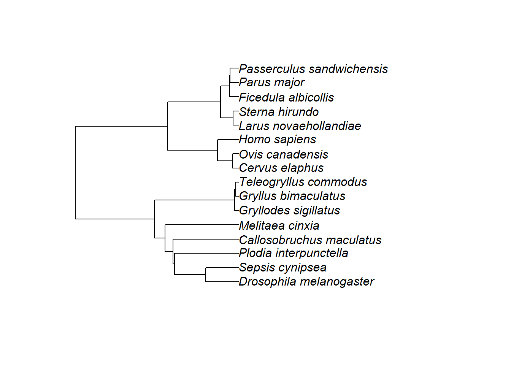

Stronger net selection on males across animals
Supplementary material reporting R code
Lennart Winkler1, Maria Moiron2, Edward H. Morrow3 and Tim Janicke1,2
1Applied Zoology, Technical University Dresden
2Centre d’Écologie Fonctionnelle et Évolutive, UMR 5175, CNRS, Université de Montpellier 3Department for Environmental and Life Sciences, Karlstad University
Last updated: 2021-09-22
Checks: 7 0
Knit directory: Net_Selection_eLife_code/
This reproducible R Markdown analysis was created with workflowr (version 1.6.2). The Checks tab describes the reproducibility checks that were applied when the results were created. The Past versions tab lists the development history.
Great! Since the R Markdown file has been committed to the Git repository, you know the exact version of the code that produced these results.
Great job! The global environment was empty. Objects defined in the global environment can affect the analysis in your R Markdown file in unknown ways. For reproduciblity it’s best to always run the code in an empty environment.
The command set.seed(20210613) was run prior to running the code in the R Markdown file. Setting a seed ensures that any results that rely on randomness, e.g. subsampling or permutations, are reproducible.
Great job! Recording the operating system, R version, and package versions is critical for reproducibility.
Nice! There were no cached chunks for this analysis, so you can be confident that you successfully produced the results during this run.
Great job! Using relative paths to the files within your workflowr project makes it easier to run your code on other machines.
Great! You are using Git for version control. Tracking code development and connecting the code version to the results is critical for reproducibility.
The results in this page were generated with repository version 8c7305f. See the Past versions tab to see a history of the changes made to the R Markdown and HTML files.
Note that you need to be careful to ensure that all relevant files for the analysis have been committed to Git prior to generating the results (you can use wflow_publish or wflow_git_commit). workflowr only checks the R Markdown file, but you know if there are other scripts or data files that it depends on. Below is the status of the Git repository when the results were generated:
Ignored files:
Ignored: .Rhistory
Ignored: data/.Rhistory
Untracked files:
Untracked: data/META_SexSpecGenVar_Pylogeny_v05_NEWICK.txt
Untracked: data/META_SexSpecGenVar_Pylogeny_v05_PIC.txt
Untracked: data/Winkler_et_al_2021_DataTable.txt
Note that any generated files, e.g. HTML, png, CSS, etc., are not included in this status report because it is ok for generated content to have uncommitted changes.
These are the previous versions of the repository in which changes were made to the R Markdown (analysis/index.Rmd) and HTML (docs/index.html) files. If you’ve configured a remote Git repository (see ?wflow_git_remote), click on the hyperlinks in the table below to view the files as they were in that past version.
| File | Version | Author | Date | Message |
|---|---|---|---|---|
| html | dcdf568 | LennartWinkler | 2021-09-22 | Build site. |
| Rmd | 1d415ea | LennartWinkler | 2021-09-22 | wflow_publish(republish = TRUE, all = T) |
| html | 1d415ea | LennartWinkler | 2021-09-22 | wflow_publish(republish = TRUE, all = T) |
| Rmd | f1eb5c9 | LennartWinkler | 2021-09-22 | wflow_publish(all = T) |
| html | f1eb5c9 | LennartWinkler | 2021-09-22 | wflow_publish(all = T) |
| html | 0f87db4 | LennartWinkler | 2021-06-23 | Build site. |
| Rmd | b46a782 | LennartWinkler | 2021-06-23 | wflow_publish(all = T) |
| html | b46a782 | LennartWinkler | 2021-06-23 | wflow_publish(all = T) |
| html | 79ae987 | LennartWinkler | 2021-06-23 | Build site. |
| Rmd | f7593bd | LennartWinkler | 2021-06-23 | wflow_publish(all = T) |
| html | f7593bd | LennartWinkler | 2021-06-23 | wflow_publish(all = T) |
| html | 98c553d | LennartWinkler | 2021-06-23 | Build site. |
| Rmd | 926ceb8 | LennartWinkler | 2021-06-23 | wflow_publish(all = T) |
| html | 926ceb8 | LennartWinkler | 2021-06-23 | wflow_publish(all = T) |
| html | 3bccaab | LennartWinkler | 2021-06-23 | Build site. |
| Rmd | 7ffcf00 | LennartWinkler | 2021-06-23 | wflow_publish(all = T) |
| html | 7ffcf00 | LennartWinkler | 2021-06-23 | wflow_publish(all = T) |
| html | 63df934 | LennartWinkler | 2021-06-23 | Build site. |
| Rmd | 36c6fdc | LennartWinkler | 2021-06-23 | wflow_publish(all = T) |
| html | 36c6fdc | LennartWinkler | 2021-06-23 | wflow_publish(all = T) |
| html | b3577de | LennartWinkler | 2021-06-23 | Build site. |
| Rmd | 85c0b6e | LennartWinkler | 2021-06-23 | wflow_publish(all = T) |
| html | 85c0b6e | LennartWinkler | 2021-06-23 | wflow_publish(all = T) |
| html | 4ed93cf | LennartWinkler | 2021-06-23 | Build site. |
| Rmd | 058af7b | LennartWinkler | 2021-06-23 | wflow_publish(all = T) |
| html | 058af7b | LennartWinkler | 2021-06-23 | wflow_publish(all = T) |
| html | 223df21 | LennartWinkler | 2021-06-23 | Build site. |
| Rmd | f63b665 | LennartWinkler | 2021-06-23 | wflow_publish(all = T) |
| html | f63b665 | LennartWinkler | 2021-06-23 | wflow_publish(all = T) |
| html | 3139eb4 | LennartWinkler | 2021-06-14 | Build site. |
| Rmd | 9290105 | LennartWinkler | 2021-06-14 | wflow_publish(all = TRUE) |
| html | 9290105 | LennartWinkler | 2021-06-14 | wflow_publish(all = TRUE) |
| html | 01525f8 | LennartWinkler | 2021-06-13 | Build site. |
| Rmd | 161eee9 | LennartWinkler | 2021-06-13 | wflow_publish(“C:/Users/lenna/Desktop/Documents/PhD/2020_META SexSpecGenVar/eLife/Net_Selection_eLife_code/analysis/index.Rmd”) |
| html | 6f60c27 | LennartWinkler | 2021-06-13 | Build site. |
| Rmd | 555a290 | LennartWinkler | 2021-06-13 | wflow_publish(“C:/Users/lenna/Documents/Net_Selection_eLife_code/analysis/index.Rmd”) |
| html | 9220292 | LennartWinkler | 2021-06-13 | Build site. |
| Rmd | 15f14fe | LennartWinkler | 2021-06-13 | wflow_publish(“C:/Users/lenna/Documents/Net_Selection_eLife_code/analysis/index.Rmd”) |
| html | db2f16f | LennartWinkler | 2021-06-13 | Build site. |
| Rmd | 00738af | LennartWinkler | 2021-06-13 | wflow_publish(“C:/Users/lenna/Documents/Net_Selection_eLife_code/analysis/index.Rmd”) |
| html | 7d5ef2c | LennartWinkler | 2021-06-13 | Build site. |
| Rmd | 320011b | LennartWinkler | 2021-06-13 | Start workflowr project. |
Supplementary material reporting R code for the manuscript ‘Stronger net selection on males across animals’.
Load and prepare data
Before we started the analyses, we loaded all necessary packages and data.
#load packages
rm(list = ls())
library(ape)
library(MCMCglmm)
library(caper) #for phylogenetic independent contrasts (PICs)
library(tidyr)
library(matrixcalc)
library(lattice)
library(ggplot2)
library(reshape2)
#load data
setwd(".")
Data <- read.delim("./data/Winkler_et_al_2021_DataTable.txt")
theTree <- read.tree("./data/META_SexSpecGenVar_Pylogeny_v05_NEWICK.txt") #phylogenetic tree
#Load phylogenetic tree for PIC analyses
PIC_Tree <- read.tree("./data/META_SexSpecGenVar_Pylogeny_v05_PIC.txt")
## Reorganising and subsetting dataset ####
stacked_gen_Data <- gather(Data, key = "Sex",value = "genCV", genCV_male, genCV_female)
stacked_phen_Data <- gather(Data, key = "Sex",value = "phenCV", phenCV_male, phenCV_female)
RS_gen_metaData<-subset(stacked_gen_Data, FitnessCat == "RS")
LS_gen_metaData<-subset(stacked_gen_Data, FitnessCat == "LS")
RS_phen_metaData<-subset(stacked_phen_Data, FitnessCat == "RS")
LS_phen_metaData<-subset(stacked_phen_Data, FitnessCat == "LS")
RS_Data<-subset(Data, FitnessCat == "RS")
LS_Data<-subset(Data, FitnessCat == "LS")Phenotypic gambit
Statistical analyses were carried out in two steps. First, we examined the key assumption of the ‘phenotypic gambit’ by testing whether estimates of phenotypic variance predict the estimated genetic variance. For this we ran linear regressions with CVP defined as predictor variable and CVG defined as response variable. This was done separately for both sexes and the two fitness components. The analyses on the phenotypic gambit were motivated from a methodological perspective and we did not expect that inter-specific variation in the difference between CVP and CVG can be explained by a shared phylogenetic history. However, for completeness, we also ran linear regressions on phylogenetic independent contrasts (PICs) computed using the crunch function of the caper R-package (version 1.0.1) in R (Orme et al. 2018) to test whether our findings were robust when accounting for potential phylogenetic non-independence.
First, we computed linear regressions between genetic and phenotypic variances, not controlling for the phylogeny. We started with the linear regression in reproductive success for males.
### Linear regressions (not controlling for phylogeny) ####
LM_Gambit_RS_males <- lm(genCV_male ~ phenCV_male, data = RS_Data) #Reproductive success in males
summary(LM_Gambit_RS_males) #Reproductive success in males
Call:
lm(formula = genCV_male ~ phenCV_male, data = RS_Data)
Residuals:
Min 1Q Median 3Q Max
-0.39325 -0.13953 -0.08111 0.11677 0.62956
Coefficients:
Estimate Std. Error t value Pr(>|t|)
(Intercept) 0.24747 0.06078 4.071 0.000139 ***
phenCV_male 0.08514 0.05981 1.423 0.159792
---
Signif. codes: 0 '***' 0.001 '**' 0.01 '*' 0.05 '.' 0.1 ' ' 1
Residual standard error: 0.2214 on 60 degrees of freedom
Multiple R-squared: 0.03267, Adjusted R-squared: 0.01654
F-statistic: 2.026 on 1 and 60 DF, p-value: 0.1598Then we continued with the linear regression in reproductive success for females.
LM_Gambit_RS_females <- lm(genCV_female ~ phenCV_female, data = RS_Data) #Reproductive success in females
summary(LM_Gambit_RS_females) #Reproductive success in females
Call:
lm(formula = genCV_female ~ phenCV_female, data = RS_Data)
Residuals:
Min 1Q Median 3Q Max
-0.24799 -0.10236 -0.02864 0.07889 0.54843
Coefficients:
Estimate Std. Error t value Pr(>|t|)
(Intercept) 0.21221 0.04865 4.362 5.14e-05 ***
phenCV_female 0.03832 0.06480 0.591 0.556
---
Signif. codes: 0 '***' 0.001 '**' 0.01 '*' 0.05 '.' 0.1 ' ' 1
Residual standard error: 0.1755 on 60 degrees of freedom
Multiple R-squared: 0.005795, Adjusted R-squared: -0.01077
F-statistic: 0.3497 on 1 and 60 DF, p-value: 0.5565Next, the linear regression in lifespan for males.
LM_Gambit_LS_males <- lm(genCV_male ~ phenCV_male, data = LS_Data) #Lifespan in males
summary(LM_Gambit_LS_males) #Lifespan in males
Call:
lm(formula = genCV_male ~ phenCV_male, data = LS_Data)
Residuals:
Min 1Q Median 3Q Max
-0.200220 -0.059558 0.006778 0.048454 0.260075
Coefficients:
Estimate Std. Error t value Pr(>|t|)
(Intercept) 0.04934 0.02969 1.662 0.104960
phenCV_male 0.26577 0.06794 3.912 0.000378 ***
---
Signif. codes: 0 '***' 0.001 '**' 0.01 '*' 0.05 '.' 0.1 ' ' 1
Residual standard error: 0.09687 on 37 degrees of freedom
Multiple R-squared: 0.2926, Adjusted R-squared: 0.2734
F-statistic: 15.3 on 1 and 37 DF, p-value: 0.0003778Finally, the linear regression in lifespan for females.
LM_Gambit_LS_females <- lm(genCV_female ~ phenCV_female, data = LS_Data) #Lifespan in females
summary(LM_Gambit_LS_females) #Lifespan in females
Call:
lm(formula = genCV_female ~ phenCV_female, data = LS_Data)
Residuals:
Min 1Q Median 3Q Max
-0.16792 -0.05745 0.01441 0.04686 0.15623
Coefficients:
Estimate Std. Error t value Pr(>|t|)
(Intercept) 0.05455 0.02248 2.426 0.020245 *
phenCV_female 0.20435 0.05083 4.020 0.000275 ***
---
Signif. codes: 0 '***' 0.001 '**' 0.01 '*' 0.05 '.' 0.1 ' ' 1
Residual standard error: 0.0733 on 37 degrees of freedom
Multiple R-squared: 0.304, Adjusted R-squared: 0.2852
F-statistic: 16.16 on 1 and 37 DF, p-value: 0.0002749Next, we expanded the previous analyses on the phenotypic gambit, by considering the phylogeny using phylogenetic independent contrasts (PICs).
# Phylogenetic linear regressions using the caper package ####
#Build phylogenetic tree for reproductive success
RS_Data$Species_PIC <- factor(RS_Data$Species_PIC)
RS_Species_Data_PIC <- unique(RS_Data$Species_PIC)
RS_PIC_Tree<-drop.tip(PIC_Tree, PIC_Tree$tip.label[-na.omit(match(RS_Species_Data_PIC, PIC_Tree$tip.label))])
plot(RS_PIC_Tree)#Build phylogenetic tree for lifespan
LS_Data$Species_PIC <- factor(LS_Data$Species_PIC)
LS_Species_Data_PIC <- unique(LS_Data$Species_PIC)
LS_PIC_Tree<-drop.tip(PIC_Tree, PIC_Tree$tip.label[-na.omit(match(LS_Species_Data_PIC, PIC_Tree$tip.label))])
plot(LS_PIC_Tree)#Combine phylogeny and data
PGLS_RS_Data <-comparative.data(phy = RS_PIC_Tree, data = RS_Data, names.col = Species_PIC, vcv = TRUE, na.omit = FALSE, warn.dropped = TRUE)
PGLS_LS_Data <-comparative.data(phy = LS_PIC_Tree, data = LS_Data, names.col = Species_PIC, vcv = TRUE, na.omit = FALSE, warn.dropped = TRUE)
#Run PIC using caper package
PIC_Crunch_mRS <- crunch(genCV_male ~ phenCV_male, data=PGLS_RS_Data, equal.branch.length=FALSE)
PIC_Crunch_fRS <- crunch(genCV_female ~ phenCV_female, data=PGLS_RS_Data, equal.branch.length=FALSE)
PIC_Crunch_mLS <- crunch(genCV_male ~ phenCV_male, data=PGLS_LS_Data, equal.branch.length=FALSE)
PIC_Crunch_fLS <- crunch(genCV_female ~ phenCV_female, data=PGLS_LS_Data, equal.branch.length=FALSE)
PIC_Crunch_mRS #PIC male reproductive success
PIC_Crunch_fRS #PIC female reproductive success
PIC_Crunch_mLS #PIC male lifespan
PIC_Crunch_fLS #PIC female lifespanThe results for phylogenetic independent contrast (PIC) for male reproductive success:
Phylogenetic Independent Contrasts analysis using:crunch.
Response values are species rich contrasts using:
Phylogeny: (62 tips)
Data: (62 rows)
Number of valid contrasts: 61
Call:
lm(genCV_male ~ phenCV_male - 1, data = contrData)
Residuals:
Min 1Q Median 3Q Max
-5.3797 -0.0128 0.0685 1.1351 7.6022
Coefficients:
Estimate Std. Error t value Pr(>|t|)
phenCV_male 0.11328 0.05145 2.202 0.0315 *
---
Signif. codes: 0 '***' 0.001 '**' 0.01 '*' 0.05 '.' 0.1 ' ' 1
Residual standard error: 2.071 on 60 degrees of freedom
Multiple R-squared: 0.07475, Adjusted R-squared: 0.05933
F-statistic: 4.847 on 1 and 60 DF, p-value: 0.03155The results for phylogenetic independent contrast (PIC) for female reproductive success:
Phylogenetic Independent Contrasts analysis using:crunch.
Response values are species rich contrasts using:
Phylogeny: (62 tips)
Data: (62 rows)
Number of valid contrasts: 61
Call:
lm(genCV_female ~ phenCV_female - 1, data = contrData)
Residuals:
Min 1Q Median 3Q Max
-4.4166 -0.1539 0.0011 0.5176 3.7100
Coefficients:
Estimate Std. Error t value Pr(>|t|)
phenCV_female 0.19087 0.06503 2.935 0.00472 **
---
Signif. codes: 0 '***' 0.001 '**' 0.01 '*' 0.05 '.' 0.1 ' ' 1
Residual standard error: 1.498 on 60 degrees of freedom
Multiple R-squared: 0.1256, Adjusted R-squared: 0.111
F-statistic: 8.615 on 1 and 60 DF, p-value: 0.00472The results for phylogenetic independent contrast (PIC) for male lifespan:
Phylogenetic Independent Contrasts analysis using:crunch.
Response values are species rich contrasts using:
Phylogeny: (39 tips)
Data: (39 rows)
Number of valid contrasts: 38
Call:
lm(genCV_male ~ phenCV_male - 1, data = contrData)
Residuals:
Min 1Q Median 3Q Max
-1.23024 -0.03652 -0.00295 0.24827 1.80770
Coefficients:
Estimate Std. Error t value Pr(>|t|)
phenCV_male 0.55262 0.04826 11.45 1.01e-13 ***
---
Signif. codes: 0 '***' 0.001 '**' 0.01 '*' 0.05 '.' 0.1 ' ' 1
Residual standard error: 0.5219 on 37 degrees of freedom
Multiple R-squared: 0.7799, Adjusted R-squared: 0.774
F-statistic: 131.1 on 1 and 37 DF, p-value: 1.008e-13The results for phylogenetic independent contrast (PIC) for female lifespan:
Phylogenetic Independent Contrasts analysis using:crunch.
Response values are species rich contrasts using:
Phylogeny: (39 tips)
Data: (39 rows)
Number of valid contrasts: 38
Call:
lm(genCV_female ~ phenCV_female - 1, data = contrData)
Residuals:
Min 1Q Median 3Q Max
-1.19148 -0.01920 -0.00039 0.31029 1.23392
Coefficients:
Estimate Std. Error t value Pr(>|t|)
phenCV_female 0.34523 0.03616 9.547 1.6e-11 ***
---
Signif. codes: 0 '***' 0.001 '**' 0.01 '*' 0.05 '.' 0.1 ' ' 1
Residual standard error: 0.4447 on 37 degrees of freedom
Multiple R-squared: 0.7112, Adjusted R-squared: 0.7034
F-statistic: 91.14 on 1 and 37 DF, p-value: 1.6e-11Stronger net selection on males (PGLMMs)
In this second part of the analysis, we tested the hypothesis that net selection is stronger on males by testing for a male bias in CVP and CVG. Specifically, we ran Phylogenetic General Linear Mixed-Effects Models (PGLMMs) with CVP or CVG as the response variable, and sex as a fixed effect. To account for the paired data structure, we added an observation identifier as a random effect. Moreover, all models included a study identifier and the phylogeny (transformed into a correlation matrix) as random effects to account for statistical non-independence arising from shared study design or phylogenetic history, respectively. Note that the latter also accounts for the non-independence of estimates obtained from the same species as some studies estimated genetic variances from distinct field populations (Fox et al. 2004) or different experimental treatments under laboratory conditions such as food stress (Holman & Jacomb 2017) and temperature stress (Berger et al. 2014). In an additional series of PGLMMs we tested whether our proxy of sexual selection explained inter-specific variation in the sex-differences of CVP or CVG by adding mating system and its interaction with sex as fixed effects to the models. These analyses were run on both the complete dataset and on a subset including only vertebrates. The latter set of analyses were done to acknowledge the fact that all sampled invertebrate species were classified as polygamous and the three independent evolutionary events in our phylogeny marking transitions between mating systems occurred in vertebrates (including 6 polygamous species, 6 monogamous species). Finally, given that primary studies varied in several methodological aspects (see section ‘Literature Search and Characterization of Primary Studies’) and whenever the level of replication allowed statistical analysis, we tested whether the different approaches predicted estimates of CVP and CVG and affected their sex-difference. Specifically, we ran three PGLMMs to test separately for effects of the study type, the estimate of genetic variance VG, and the type of reproductive success metric (see above). We carried out PGLMMs with the MCMCglmm R-package (version 2.2.9) (Hadfield 2010), using uninformative priors (V = 1, nu = 0.01) and an effective sample size of 20000 (number of iterations = 11000000, burn-in = 1000000, thinning interval = 500). We computed the proportion of variance explained by fixed factors (‘marginal R2’) (Nakagawa & Schielzeth 2013). In addition, we quantified the phylogenetic signal as the phylogenetic heritability H2 (i.e., proportional variance in CVP or CVG explained by the phylogeny) (de Villemereuil & Nakagawa 2014). In a previous study testing for sex-specific phenotypic variances in reproductive success (Janicke et al. 2016), we ran formal meta-analyses using lnCVR as the tested effect size (Nakagawa et al. 2015). This is potentially a more powerful approach for comparing phenotypic variances but rendered unsuitable when comparing genetic variances. This is because the computation of the sampling variance of lnCVR is a function of the sample size of the sampled population and the point estimate of lnCVR (Nakagawa et al. 2015). However, genetic variances are estimates from statistical models and notorious for being estimated with low precision (i.e., have large confidence intervals). Therefore, using a meta-analytic approach for genetic variances using lnCVR as an effect size leads to overconfident estimation of the global effect size and is therefore likely to result in type-II-errors. However, to allow comparison with the previous meta-analysis, we report the outcome of phylogenetic meta-analyses on phenotypic variances using lnCVR in the Supplementary Material (Table S3), which largely reflects the results on the point estimates of CVP from PGLMMs.
Run MCMC models
We then ran MCMC models to test for differences in the phenotypic and genetic variances in males and females for the fitness categories reproductive success and lifespan.
First, we pruned the phylogenetic tree to the data subset.
## PRUNE PHYLOGENETIC TREE TO DATA SUBSET
RS_gen_metaData$animal <- factor(RS_gen_metaData$animal)
is.factor(RS_gen_metaData$animal)
RS_Species_Data <- unique(RS_gen_metaData$animal)
summary(RS_Species_Data)
RS_theTree<-drop.tip(theTree, theTree$tip.label[-na.omit(match(RS_Species_Data, theTree$tip.label))])
plot(RS_theTree)
We then checked if the phylogenetic tree had been build correctly.
## CHECK PHYLOGENETIC TREE
sort(RS_theTree$tip.label) == sort(unique(RS_gen_metaData$animal)) # check if tip names correspond to data names
is.ultrametric(RS_theTree) # check if BL are aligned contemporaneously
isSymmetric(vcv(RS_theTree, corr=TRUE)) # check symmetry of phylogenetic correlation matrix
rawC <- vcv(RS_theTree, corr=TRUE)
is.positive.definite(rawC) # if FALSE will have to force symmetry
forcedC <- as.matrix(forceSymmetric(vcv(RS_theTree, corr=TRUE)))
is.positive.definite(forcedC)
comparedC <- rawC == forcedC
rawC[cbind(which(comparedC!=TRUE, arr.ind = T))] - forcedC[cbind(which(comparedC!=TRUE, arr.ind = T))] < 1e-5Next, we set the priors for the MCMC models using uninformative priors (V = 1, nu = 0.01) and an effective sample size of 20000 (number of iterations = 11000000, burn-in = 1000000, thinning interval = 500). We also set the index and study ID as factors.
## Prior settings, iterations
pr<-list(R=list(V=1,nu=0.01), G=list(G1=list(V=1,nu=0.01),
G2=list(V=1,nu=0.01),
G3=list(V=1,nu=0.01)))
BURNIN = 1000000
NITT = 11000000
THIN = 500
RS_phen_metaData$Index <- as.factor(RS_phen_metaData$Index)
RS_phen_metaData$Study_ID <- as.factor(RS_phen_metaData$Study_ID)
RS_gen_metaData$Index <- as.factor(RS_gen_metaData$Index)
RS_gen_metaData$Study_ID <- as.factor(RS_gen_metaData$Study_ID)MCMC models for reproductive success
First, we ran the MCMC testing for overall differences in phenotypic variance in reproductive success (‘phenCV’) between males and females (‘Sex’). The model includes the species (‘animal’), estimate ID (‘Index’) and study ID (‘Study_ID’) as random factors (Table 1).
RS_phen_MCMC_model <- MCMCglmm(phenCV~factor(Sex),random=~animal + Index + Study_ID,
pedigree=RS_theTree,
prior=pr,
data=RS_phen_metaData,
pr = TRUE, burnin = BURNIN, nitt=NITT, thin=THIN)
summary(RS_phen_MCMC_model)
Iterations = 1000001:10999501
Thinning interval = 500
Sample size = 20000
DIC: 49.23811
G-structure: ~animal
post.mean l-95% CI u-95% CI eff.samp
animal 0.03025 0.001009 0.09079 20000
~Index
post.mean l-95% CI u-95% CI eff.samp
Index 0.05891 0.004482 0.1198 20127
~Study_ID
post.mean l-95% CI u-95% CI eff.samp
Study_ID 0.0629 0.0009535 0.1457 20000
R-structure: ~units
post.mean l-95% CI u-95% CI eff.samp
units 0.05958 0.04009 0.08303 20000
Location effects: phenCV ~ factor(Sex)
post.mean l-95% CI u-95% CI eff.samp pMCMC
(Intercept) 0.6940 0.4801 0.9185 20000 2e-04 ***
factor(Sex)phenCV_male 0.2341 0.1502 0.3231 20000 <5e-05 ***
---
Signif. codes: 0 '***' 0.001 '**' 0.01 '*' 0.05 '.' 0.1 ' ' 1We then expanded the model to include an interaction of mating system (‘Mating_system’) and sex (Table S4).
RS_phen_MatSyst_MCMC_model <- MCMCglmm(phenCV~factor(Sex) * factor(Mating_system),random=~animal + Index + Study_ID,
pedigree=RS_theTree,
prior=pr,
data=RS_phen_metaData,
pr = TRUE, burnin = BURNIN, nitt=NITT, thin=THIN)
summary(RS_phen_MatSyst_MCMC_model)
Iterations = 1000001:10999501
Thinning interval = 500
Sample size = 20000
DIC: 30.63378
G-structure: ~animal
post.mean l-95% CI u-95% CI eff.samp
animal 0.04896 0.001384 0.1414 20000
~Index
post.mean l-95% CI u-95% CI eff.samp
Index 0.06211 0.007444 0.1213 20000
~Study_ID
post.mean l-95% CI u-95% CI eff.samp
Study_ID 0.05915 0.001256 0.1407 20000
R-structure: ~units
post.mean l-95% CI u-95% CI eff.samp
units 0.05011 0.03313 0.06948 20000
Location effects: phenCV ~ factor(Sex) * factor(Mating_system)
post.mean l-95% CI
(Intercept) 0.67560 0.28295
factor(Sex)phenCV_male -0.01151 -0.17385
factor(Mating_system)polygamy 0.02515 -0.34242
factor(Sex)phenCV_male:factor(Mating_system)polygamy 0.32320 0.13743
u-95% CI eff.samp pMCMC
(Intercept) 1.04732 19513 0.0044
factor(Sex)phenCV_male 0.14407 20698 0.8854
factor(Mating_system)polygamy 0.40737 20000 0.9133
factor(Sex)phenCV_male:factor(Mating_system)polygamy 0.50448 20433 0.0005
(Intercept) **
factor(Sex)phenCV_male
factor(Mating_system)polygamy
factor(Sex)phenCV_male:factor(Mating_system)polygamy ***
---
Signif. codes: 0 '***' 0.001 '**' 0.01 '*' 0.05 '.' 0.1 ' ' 1Next, we ran the MCMC models examining the genetic variance in reproductive success (‘genCV’). First, the overall model for a sex difference (Table 1).
RS_gen_MCMC_model <- MCMCglmm(genCV~factor(Sex),random=~animal + Index + Study_ID,
pedigree=RS_theTree,
prior=pr,
data=RS_gen_metaData,
pr = TRUE, burnin = BURNIN, nitt=NITT, thin=THIN)
summary(RS_gen_MCMC_model)
Iterations = 1000001:10999501
Thinning interval = 500
Sample size = 20000
DIC: -131.1002
G-structure: ~animal
post.mean l-95% CI u-95% CI eff.samp
animal 0.01675 0.000811 0.04572 20000
~Index
post.mean l-95% CI u-95% CI eff.samp
Index 0.005744 0.001154 0.01197 20000
~Study_ID
post.mean l-95% CI u-95% CI eff.samp
Study_ID 0.0143 0.004079 0.02622 19803
R-structure: ~units
post.mean l-95% CI u-95% CI eff.samp
units 0.01469 0.01008 0.01966 20000
Location effects: genCV ~ factor(Sex)
post.mean l-95% CI u-95% CI eff.samp pMCMC
(Intercept) 0.25736 0.11555 0.40998 20000 0.0015 **
factor(Sex)genCV_male 0.08653 0.04389 0.12967 20000 0.0002 ***
---
Signif. codes: 0 '***' 0.001 '**' 0.01 '*' 0.05 '.' 0.1 ' ' 1Secondly, we included an interaction of mating system (‘Mating_system’) and sex (Table S4).
RS_gen_MatSyst_MCMC_model <- MCMCglmm(genCV~factor(Sex) * factor(Mating_system),random=~animal + Index + Study_ID,
pedigree=RS_theTree,
prior=pr,
data=RS_gen_metaData,
pr = TRUE, burnin = BURNIN, nitt=NITT, thin=THIN)
summary(RS_gen_MatSyst_MCMC_model)
Iterations = 1000001:10999501
Thinning interval = 500
Sample size = 20000
DIC: -140.0636
G-structure: ~animal
post.mean l-95% CI u-95% CI eff.samp
animal 0.01649 0.0009349 0.0464 20108
~Index
post.mean l-95% CI u-95% CI eff.samp
Index 0.00612 0.001243 0.01246 20000
~Study_ID
post.mean l-95% CI u-95% CI eff.samp
Study_ID 0.01475 0.004272 0.02715 20000
R-structure: ~units
post.mean l-95% CI u-95% CI eff.samp
units 0.01336 0.009143 0.01815 20000
Location effects: genCV ~ factor(Sex) * factor(Mating_system)
post.mean l-95% CI u-95% CI
(Intercept) 0.26415 0.08402 0.46431
factor(Sex)genCV_male -0.01501 -0.09852 0.06915
factor(Mating_system)polygamy -0.01125 -0.16752 0.14601
factor(Sex)genCV_male:factor(Mating_system)polygamy 0.13382 0.03913 0.23038
eff.samp pMCMC
(Intercept) 20000 0.0048 **
factor(Sex)genCV_male 20000 0.7240
factor(Mating_system)polygamy 20000 0.8884
factor(Sex)genCV_male:factor(Mating_system)polygamy 20353 0.0084 **
---
Signif. codes: 0 '***' 0.001 '**' 0.01 '*' 0.05 '.' 0.1 ' ' 1MCMC models for lifespan
In addition to the previous models on reproductive success, ran MCMC models to test for differences in the phenotypic and genetic variances in males and females for lifespan.
First, we pruned the phylogenetic tree to the data subset.
## PRUNE PHYLOGENETIC TREE TO DATA SUBSET
LS_gen_metaData$animal <- factor(LS_gen_metaData$animal)
is.factor(LS_gen_metaData$animal)
LS_Species_Data <- unique(LS_gen_metaData$animal)
summary(LS_Species_Data)
LS_theTree<-drop.tip(theTree, theTree$tip.label[-na.omit(match(LS_Species_Data, theTree$tip.label))])
plot(LS_theTree)
We then checked if the phylogenetic tree had been build correctly.
## CHECK PHYLOGENETIC TREE
sort(LS_theTree$tip.label) == sort(unique(LS_gen_metaData$animal)) # check if tip names correspond to data names
is.ultrametric(LS_theTree) # check if BL are aligned contemporaneously
isSymmetric(vcv(LS_theTree, corr=TRUE)) # check symmetry of phylogenetic correlation matrix
rawC <- vcv(LS_theTree, corr=TRUE)
is.positive.definite(rawC) # if FALSE will have to force symmetry
forcedC <- as.matrix(forceSymmetric(vcv(LS_theTree, corr=TRUE)))
is.positive.definite(forcedC)
comparedC <- rawC == forcedC
rawC[cbind(which(comparedC!=TRUE, arr.ind = T))] - forcedC[cbind(which(comparedC!=TRUE, arr.ind = T))] < 1e-5Next, we set the priors for the MCMC models using uninformative priors (V = 1, nu = 0.002) and an effective sample size of 20000 (number of iterations = 11000000, burn-in = 1000000, thinning interval = 500). We also set the index and study ID as factors.
## Prior settings, iterations
pr<-list(R=list(V=1,nu=0.01), G=list(G1=list(V=1,nu=0.01),
G2=list(V=1,nu=0.01),
G3=list(V=1,nu=0.01)))
BURNIN = 1000000
NITT = 11000000
THIN = 500
LS_phen_metaData$Index <- as.factor(LS_phen_metaData$Index)
LS_phen_metaData$Study_ID <- as.factor(LS_phen_metaData$Study_ID)
LS_gen_metaData$Index <- as.factor(LS_gen_metaData$Index)
LS_gen_metaData$Study_ID <- as.factor(LS_gen_metaData$Study_ID)First, we ran the MCMC testing for overall differences in phenotypic variance in lifespan (‘phenCV’) between males and females (‘Sex’). The model includes the species (‘animal’), estimate ID (‘Index’) and study ID (‘Study_ID’) as random factors (Table 1).
LS_phen_MCMC_model <- MCMCglmm(phenCV~factor(Sex),random=~animal + Index + Study_ID,
pedigree=LS_theTree,
prior=pr,
data=LS_phen_metaData,
pr = TRUE, burnin = BURNIN, nitt=NITT, thin=THIN)
summary(LS_phen_MCMC_model)
Iterations = 1000001:10999501
Thinning interval = 500
Sample size = 20000
DIC: -189.6669
G-structure: ~animal
post.mean l-95% CI u-95% CI eff.samp
animal 0.04176 0.001415 0.1304 18236
~Index
post.mean l-95% CI u-95% CI eff.samp
Index 0.01119 0.002609 0.02341 20620
~Study_ID
post.mean l-95% CI u-95% CI eff.samp
Study_ID 0.02779 0.005106 0.05456 19469
R-structure: ~units
post.mean l-95% CI u-95% CI eff.samp
units 0.00341 0.00201 0.005072 20000
Location effects: phenCV ~ factor(Sex)
post.mean l-95% CI u-95% CI eff.samp pMCMC
(Intercept) 0.430756 0.175653 0.689118 20000 0.0073 **
factor(Sex)phenCV_male -0.004789 -0.030274 0.021496 20000 0.7104
---
Signif. codes: 0 '***' 0.001 '**' 0.01 '*' 0.05 '.' 0.1 ' ' 1We then expanded the model to include an interaction of mating system (‘Mating_system’) and sex (Table S4).
LS_phen_MatSyst_MCMC_model <- MCMCglmm(phenCV~factor(Sex) * factor(Mating_system),random=~animal + Index + Study_ID,
pedigree=LS_theTree,
prior=pr,
data=LS_phen_metaData,
pr = TRUE, burnin = BURNIN, nitt=NITT, thin=THIN)
summary(LS_phen_MatSyst_MCMC_model)
Iterations = 1000001:10999501
Thinning interval = 500
Sample size = 20000
DIC: -190.3721
G-structure: ~animal
post.mean l-95% CI u-95% CI eff.samp
animal 0.06899 0.0007289 0.2345 20000
~Index
post.mean l-95% CI u-95% CI eff.samp
Index 0.01096 0.002546 0.0227 20000
~Study_ID
post.mean l-95% CI u-95% CI eff.samp
Study_ID 0.02674 0.003981 0.05366 20000
R-structure: ~units
post.mean l-95% CI u-95% CI eff.samp
units 0.00334 0.001979 0.005002 20000
Location effects: phenCV ~ factor(Sex) * factor(Mating_system)
post.mean l-95% CI
(Intercept) 0.35987 -0.04926
factor(Sex)phenCV_male 0.02678 -0.02719
factor(Mating_system)polygamy 0.10169 -0.22019
factor(Sex)phenCV_male:factor(Mating_system)polygamy -0.04085 -0.10084
u-95% CI eff.samp pMCMC
(Intercept) 0.72282 20000 0.0871 .
factor(Sex)phenCV_male 0.07867 19197 0.3186
factor(Mating_system)polygamy 0.43592 20000 0.5719
factor(Sex)phenCV_male:factor(Mating_system)polygamy 0.02066 19512 0.1834
---
Signif. codes: 0 '***' 0.001 '**' 0.01 '*' 0.05 '.' 0.1 ' ' 1Next, we ran the MCMC models examining the genetic variance in lifespan (‘genCV’). First, the overall model for a sex difference (Table 1).
LS_gen_MCMC_model <- MCMCglmm(genCV~factor(Sex),random=~animal + Index + Study_ID,
pedigree=LS_theTree,
prior=pr,
data=LS_gen_metaData,
pr = TRUE, burnin = BURNIN, nitt=NITT, thin=THIN)
summary(LS_gen_MCMC_model)
Iterations = 1000001:10999501
Thinning interval = 500
Sample size = 20000
DIC: -214.4485
G-structure: ~animal
post.mean l-95% CI u-95% CI eff.samp
animal 0.01277 0.0009457 0.0359 20000
~Index
post.mean l-95% CI u-95% CI eff.samp
Index 0.002128 0.0006209 0.00431 20000
~Study_ID
post.mean l-95% CI u-95% CI eff.samp
Study_ID 0.00633 0.001698 0.01227 20000
R-structure: ~units
post.mean l-95% CI u-95% CI eff.samp
units 0.002644 0.001612 0.00378 20000
Location effects: genCV ~ factor(Sex)
post.mean l-95% CI u-95% CI eff.samp pMCMC
(Intercept) 0.140077 -0.002497 0.281642 20542 0.0529 .
factor(Sex)genCV_male 0.016722 -0.005430 0.040323 20000 0.1464
---
Signif. codes: 0 '***' 0.001 '**' 0.01 '*' 0.05 '.' 0.1 ' ' 1Secondly, including an interaction of mating system (‘Mating_system’) and sex (Table S4).
LS_gen_MatSyst_MCMC_model <- MCMCglmm(genCV~factor(Sex) * factor(Mating_system),random=~animal + Index + Study_ID,
pedigree=LS_theTree,
prior=pr,
data=LS_gen_metaData,
pr = TRUE, burnin = BURNIN, nitt=NITT, thin=THIN)
summary(LS_gen_MatSyst_MCMC_model)
Iterations = 1000001:10999501
Thinning interval = 500
Sample size = 20000
DIC: -216.0559
G-structure: ~animal
post.mean l-95% CI u-95% CI eff.samp
animal 0.01274 0.0009163 0.03568 20000
~Index
post.mean l-95% CI u-95% CI eff.samp
Index 0.00212 0.0005475 0.00422 20000
~Study_ID
post.mean l-95% CI u-95% CI eff.samp
Study_ID 0.006334 0.001703 0.0122 19491
R-structure: ~units
post.mean l-95% CI u-95% CI eff.samp
units 0.00256 0.001542 0.003665 20000
Location effects: genCV ~ factor(Sex) * factor(Mating_system)
post.mean l-95% CI
(Intercept) 0.162764 0.001801
factor(Sex)genCV_male 0.049759 0.003971
factor(Mating_system)polygamy -0.035428 -0.162993
factor(Sex)genCV_male:factor(Mating_system)polygamy -0.042970 -0.095263
u-95% CI eff.samp pMCMC
(Intercept) 0.329991 20000 0.0538 .
factor(Sex)genCV_male 0.097362 19913 0.0391 *
factor(Mating_system)polygamy 0.098228 20000 0.5792
factor(Sex)genCV_male:factor(Mating_system)polygamy 0.011890 19298 0.1159
---
Signif. codes: 0 '***' 0.001 '**' 0.01 '*' 0.05 '.' 0.1 ' ' 1Subsetting data by mating system
We then analysed the data separately for socially monogamous and polygamous species.
First we subset the data into socially monogamous and polygamous species for all fitness categories (lifespan and reproductive success) and their phenotypic as well as genetic variances.
## Additional subsetting
RS_gen_Monogamy_metaData<-subset(RS_gen_metaData, Mating_system == "monogamy")
RS_gen_Polygamy_metaData<-subset(RS_gen_metaData, Mating_system == "polygamy")
RS_phen_Monogamy_metaData<-subset(RS_phen_metaData, Mating_system == "monogamy")
RS_phen_Polygamy_metaData<-subset(RS_phen_metaData, Mating_system == "polygamy")
LS_gen_Monogamy_metaData<-subset(LS_gen_metaData, Mating_system == "monogamy")
LS_gen_Polygamy_metaData<-subset(LS_gen_metaData, Mating_system == "polygamy")
LS_phen_Monogamy_metaData<-subset(LS_phen_metaData, Mating_system == "monogamy")
LS_phen_Polygamy_metaData<-subset(LS_phen_metaData, Mating_system == "polygamy")We then pruned the phylogenetic tree to all species with data on lifespan or reproductive success for monogamous and polygamous species separately.
## PRUNE PHYLOGENETIC TREES
RS_gen_Monogamy_metaData$animal <- factor(RS_gen_Monogamy_metaData$animal)
RS_Monogamy_Species_Data <- unique(RS_gen_Monogamy_metaData$animal)
summary(RS_Monogamy_Species_Data)
RS_Monogamy_theTree<-drop.tip(theTree, theTree$tip.label[-na.omit(match(RS_Monogamy_Species_Data, theTree$tip.label))])
plot(RS_Monogamy_theTree)RS_gen_Polygamy_metaData$animal <- factor(RS_gen_Polygamy_metaData$animal)
RS_Polygamy_Species_Data <- unique(RS_gen_Polygamy_metaData$animal)
summary(RS_Polygamy_Species_Data)
RS_Polygamy_theTree<-drop.tip(theTree, theTree$tip.label[-na.omit(match(RS_Polygamy_Species_Data, theTree$tip.label))])
plot(RS_Polygamy_theTree)LS_gen_Monogamy_metaData$animal <- factor(LS_gen_Monogamy_metaData$animal)
LS_Monogamy_Species_Data <- unique(LS_gen_Monogamy_metaData$animal)
summary(LS_Monogamy_Species_Data)
LS_Monogamy_theTree<-drop.tip(theTree, theTree$tip.label[-na.omit(match(LS_Monogamy_Species_Data, theTree$tip.label))])
plot(LS_Monogamy_theTree)LS_gen_Polygamy_metaData$animal <- factor(LS_gen_Polygamy_metaData$animal)
LS_Polygamy_Species_Data <- unique(LS_gen_Polygamy_metaData$animal)
summary(LS_Polygamy_Species_Data)
LS_Polygamy_theTree<-drop.tip(theTree, theTree$tip.label[-na.omit(match(LS_Polygamy_Species_Data, theTree$tip.label))])
plot(LS_Polygamy_theTree)MCMCs for reproductive success
We then ran the MCMC models, first for the phenotypic variance in reproductive success in monogamous species (Table 1).
RS_phen_Monogamy_MCMC_model <- MCMCglmm(phenCV~factor(Sex),random=~animal + Index + Study_ID,
pedigree=RS_Monogamy_theTree,
prior=pr,
data=RS_phen_Monogamy_metaData,
pr = TRUE, burnin = BURNIN, nitt=NITT, thin=THIN)
summary(RS_phen_Monogamy_MCMC_model)
Iterations = 1000001:10999501
Thinning interval = 500
Sample size = 20000
DIC: -65.819
G-structure: ~animal
post.mean l-95% CI u-95% CI eff.samp
animal 0.5285 0.0008104 2.457 20466
~Index
post.mean l-95% CI u-95% CI eff.samp
Index 0.09383 0.0008326 0.2588 19526
~Study_ID
post.mean l-95% CI u-95% CI eff.samp
Study_ID 0.09331 0.0009878 0.2594 20310
R-structure: ~units
post.mean l-95% CI u-95% CI eff.samp
units 0.004682 0.001673 0.008786 20000
Location effects: phenCV ~ factor(Sex)
post.mean l-95% CI u-95% CI eff.samp pMCMC
(Intercept) 0.85145 -0.11209 1.84827 19853 0.0696 .
factor(Sex)phenCV_male -0.01228 -0.06019 0.03900 20000 0.5982
---
Signif. codes: 0 '***' 0.001 '**' 0.01 '*' 0.05 '.' 0.1 ' ' 1Next, we ran the MCMC model for the genetic variance in reproductive success in monogamous species (Table 1).
RS_gen_Monogamy_MCMC_model <- MCMCglmm(genCV~factor(Sex),random=~animal + Index + Study_ID,
pedigree=RS_Monogamy_theTree,
prior=pr,
data=RS_gen_Monogamy_metaData,
pr = TRUE, burnin = BURNIN, nitt=NITT, thin=THIN)
summary(RS_gen_Monogamy_MCMC_model)
Iterations = 1000001:10999501
Thinning interval = 500
Sample size = 20000
DIC: -51.50387
G-structure: ~animal
post.mean l-95% CI u-95% CI eff.samp
animal 0.0603 0.0006262 0.2358 20000
~Index
post.mean l-95% CI u-95% CI eff.samp
Index 0.01264 0.001037 0.03208 20000
~Study_ID
post.mean l-95% CI u-95% CI eff.samp
Study_ID 0.01264 0.0009578 0.03221 20000
R-structure: ~units
post.mean l-95% CI u-95% CI eff.samp
units 0.007524 0.002912 0.01365 20000
Location effects: genCV ~ factor(Sex)
post.mean l-95% CI u-95% CI eff.samp pMCMC
(Intercept) 0.21237 -0.13103 0.53680 20533 0.125
factor(Sex)genCV_male -0.01467 -0.07633 0.04813 20000 0.624Then followed the models for reproductive success in polygamous species. First, the MCMC for the phenotypic variance in reproductive success in polygamous species (Table 1).
RS_phen_Polygamy_MCMC_model <- MCMCglmm(phenCV~factor(Sex),random=~animal + Index + Study_ID,
pedigree=RS_Polygamy_theTree,
prior=pr,
data=RS_phen_Polygamy_metaData,
pr = TRUE, burnin = BURNIN, nitt=NITT, thin=THIN)
summary(RS_phen_Polygamy_MCMC_model)
Iterations = 1000001:10999501
Thinning interval = 500
Sample size = 20000
DIC: 43.71919
G-structure: ~animal
post.mean l-95% CI u-95% CI eff.samp
animal 0.05677 0.0009819 0.1682 20561
~Index
post.mean l-95% CI u-95% CI eff.samp
Index 0.05064 0.002271 0.1065 19507
~Study_ID
post.mean l-95% CI u-95% CI eff.samp
Study_ID 0.05453 0.001008 0.142 20293
R-structure: ~units
post.mean l-95% CI u-95% CI eff.samp
units 0.06591 0.04087 0.09548 20000
Location effects: phenCV ~ factor(Sex)
post.mean l-95% CI u-95% CI eff.samp pMCMC
(Intercept) 0.7011 0.4155 0.9878 20000 4e-04 ***
factor(Sex)phenCV_male 0.3121 0.2116 0.4210 20000 <5e-05 ***
---
Signif. codes: 0 '***' 0.001 '**' 0.01 '*' 0.05 '.' 0.1 ' ' 1Next, we ran the MCMC model for the genetic variance in reproductive success in polygamous species (Table 1).
RS_gen_Polygamy_MCMC_model <- MCMCglmm(genCV~factor(Sex),random=~animal + Index + Study_ID,
pedigree=RS_Polygamy_theTree,
prior=pr,
data=RS_gen_Polygamy_metaData,
pr = TRUE, burnin = BURNIN, nitt=NITT, thin=THIN)
summary(RS_gen_Polygamy_MCMC_model)
Iterations = 1000001:10999501
Thinning interval = 500
Sample size = 20000
DIC: -95.4313
G-structure: ~animal
post.mean l-95% CI u-95% CI eff.samp
animal 0.01739 0.0008811 0.0504 20000
~Index
post.mean l-95% CI u-95% CI eff.samp
Index 0.006173 0.001135 0.01314 19406
~Study_ID
post.mean l-95% CI u-95% CI eff.samp
Study_ID 0.01805 0.004008 0.03502 20000
R-structure: ~units
post.mean l-95% CI u-95% CI eff.samp
units 0.01545 0.009833 0.02132 19382
Location effects: genCV ~ factor(Sex)
post.mean l-95% CI u-95% CI eff.samp pMCMC
(Intercept) 0.25194 0.09535 0.41043 20000 0.0053 **
factor(Sex)genCV_male 0.11857 0.06907 0.16870 20000 <5e-05 ***
---
Signif. codes: 0 '***' 0.001 '**' 0.01 '*' 0.05 '.' 0.1 ' ' 1MCMCs for lifespan
Now followed the mating system specific MCMCs for lifespan. We first ran the MCMC models for the phenotypic variance in lifespan in monogamous species (Table 1).
LS_phen_Monogamy_MCMC_model <- MCMCglmm(phenCV~factor(Sex),random=~animal + Index + Study_ID,
pedigree=LS_Monogamy_theTree,
prior=pr,
data=LS_phen_Monogamy_metaData,
pr = TRUE, burnin = BURNIN, nitt=NITT, thin=THIN)
summary(LS_phen_Monogamy_MCMC_model)
Iterations = 1000001:10999501
Thinning interval = 500
Sample size = 20000
DIC: -51.18382
G-structure: ~animal
post.mean l-95% CI u-95% CI eff.samp
animal 0.08956 0.0006984 0.3387 20000
~Index
post.mean l-95% CI u-95% CI eff.samp
Index 0.03274 0.0009689 0.0942 20000
~Study_ID
post.mean l-95% CI u-95% CI eff.samp
Study_ID 0.03255 0.001071 0.09425 20000
R-structure: ~units
post.mean l-95% CI u-95% CI eff.samp
units 0.003234 0.0007601 0.007181 20000
Location effects: phenCV ~ factor(Sex)
post.mean l-95% CI u-95% CI eff.samp pMCMC
(Intercept) 0.51524 0.10435 0.91095 20000 0.028 *
factor(Sex)phenCV_male 0.02670 -0.02984 0.07817 20000 0.286
---
Signif. codes: 0 '***' 0.001 '**' 0.01 '*' 0.05 '.' 0.1 ' ' 1Next, we ran the MCMC model for the genetic variance in lifespan in monogamous species (Table 1).
LS_gen_Monogamy_MCMC_model <- MCMCglmm(genCV~factor(Sex),random=~animal + Index + Study_ID,
pedigree=LS_Monogamy_theTree,
prior=pr,
data=LS_gen_Monogamy_metaData,
pr = TRUE, burnin = BURNIN, nitt=NITT, thin=THIN)
summary(LS_gen_Monogamy_MCMC_model)
Iterations = 1000001:10999501
Thinning interval = 500
Sample size = 20000
DIC: -35.09093
G-structure: ~animal
post.mean l-95% CI u-95% CI eff.samp
animal 0.05535 0.001091 0.1965 20000
~Index
post.mean l-95% CI u-95% CI eff.samp
Index 0.01318 0.0007922 0.03887 20000
~Study_ID
post.mean l-95% CI u-95% CI eff.samp
Study_ID 0.01314 0.0008344 0.03826 16829
R-structure: ~units
post.mean l-95% CI u-95% CI eff.samp
units 0.006671 0.001822 0.01405 20000
Location effects: genCV ~ factor(Sex)
post.mean l-95% CI u-95% CI eff.samp pMCMC
(Intercept) 0.14569 -0.19152 0.47027 20000 0.261
factor(Sex)genCV_male 0.05010 -0.02676 0.12622 20000 0.174Then followed the models for lifespan in polygamous species. First, the MCMC for the phenotypic variance in lifespan in polygamous species (Table 1).
LS_phen_Polygamy_MCMC_model <- MCMCglmm(phenCV~factor(Sex),random=~animal + Index + Study_ID,
pedigree=LS_Polygamy_theTree,
prior=pr,
data=LS_phen_Polygamy_metaData,
pr = TRUE, burnin = BURNIN, nitt=NITT, thin=THIN)
summary(LS_phen_Polygamy_MCMC_model)
Iterations = 1000001:10999501
Thinning interval = 500
Sample size = 20000
DIC: -138.2843
G-structure: ~animal
post.mean l-95% CI u-95% CI eff.samp
animal 0.1165 0.001366 0.319 20000
~Index
post.mean l-95% CI u-95% CI eff.samp
Index 0.009194 0.002231 0.019 20000
~Study_ID
post.mean l-95% CI u-95% CI eff.samp
Study_ID 0.01863 0.002682 0.04381 20000
R-structure: ~units
post.mean l-95% CI u-95% CI eff.samp
units 0.003992 0.002064 0.006217 20000
Location effects: phenCV ~ factor(Sex)
post.mean l-95% CI u-95% CI eff.samp pMCMC
(Intercept) 0.50253 0.09672 0.93815 20000 0.0206 *
factor(Sex)phenCV_male -0.01390 -0.04549 0.01817 20000 0.3933
---
Signif. codes: 0 '***' 0.001 '**' 0.01 '*' 0.05 '.' 0.1 ' ' 1Next, we run the MCMC model for the genetic variance in lifespan in polygamous species (Table 1).
LS_gen_Polygamy_MCMC_model <- MCMCglmm(genCV~factor(Sex),random=~animal + Index + Study_ID,
pedigree=LS_Polygamy_theTree,
prior=pr,
data=LS_gen_Polygamy_metaData,
pr = TRUE, burnin = BURNIN, nitt=NITT, thin=THIN)
summary(LS_gen_Polygamy_MCMC_model)
Iterations = 1000001:10999501
Thinning interval = 500
Sample size = 20000
DIC: -180.7517
G-structure: ~animal
post.mean l-95% CI u-95% CI eff.samp
animal 0.009475 0.0007683 0.02627 20000
~Index
post.mean l-95% CI u-95% CI eff.samp
Index 0.001933 0.0006136 0.003849 20000
~Study_ID
post.mean l-95% CI u-95% CI eff.samp
Study_ID 0.005425 0.001315 0.0111 20000
R-structure: ~units
post.mean l-95% CI u-95% CI eff.samp
units 0.002116 0.001202 0.003159 20000
Location effects: genCV ~ factor(Sex)
post.mean l-95% CI u-95% CI eff.samp pMCMC
(Intercept) 0.132430 0.012503 0.267101 20757 0.0401 *
factor(Sex)genCV_male 0.006762 -0.017139 0.029570 20000 0.5576
---
Signif. codes: 0 '***' 0.001 '**' 0.01 '*' 0.05 '.' 0.1 ' ' 1Analyses of vertebrates
In this part, we analysed the vertebrate species separately, as all monogamous species in this dataset are vertebrates (see table S5 & S6).
We first subset our data frame to only include vertebrates (mammalia, aves or reptilia).
Data_vertebrates <-subset(Data, Class == "Mammalia" | Class == "Aves" | Class == "Reptilia")
stacked_gen_Data_vertebrates <- gather(Data_vertebrates, key = "Sex",value = "genCV", genCV_male, genCV_female)
stacked_phen_Data_vertebrates <- gather(Data_vertebrates, key = "Sex",value = "phenCV", phenCV_male, phenCV_female)
RS_gen_metaData_vertebrates<-subset(stacked_gen_Data_vertebrates, FitnessCat == "RS")
LS_gen_metaData_vertebrates<-subset(stacked_gen_Data_vertebrates, FitnessCat == "LS")
RS_phen_metaData_vertebrates<-subset(stacked_phen_Data_vertebrates, FitnessCat == "RS")
LS_phen_metaData_vertebrates<-subset(stacked_phen_Data_vertebrates, FitnessCat == "LS")MCMCs for reproductive success
We pruned the phylogenetic tree to all vertebrate species with data on reproductive success.
## PRUNE PHYLOGENETIC TREE TO DATA SUBSET
RS_gen_metaData_vertebrates$animal <- factor(RS_gen_metaData_vertebrates$animal)
is.factor(RS_gen_metaData_vertebrates$animal)
RS_Species_Data_vertebrates <- unique(RS_gen_metaData_vertebrates$animal)
summary(RS_Species_Data_vertebrates)
RS_theTree_vertebrates<-drop.tip(theTree, theTree$tip.label[-na.omit(match(RS_Species_Data_vertebrates, theTree$tip.label))])
plot(RS_theTree_vertebrates)RS_phen_metaData_vertebrates$Index <- as.factor(RS_phen_metaData_vertebrates$Index)
RS_phen_metaData_vertebrates$Study_ID <- as.factor(RS_phen_metaData_vertebrates$Study_ID)
RS_gen_metaData_vertebrates$Index <- as.factor(RS_gen_metaData_vertebrates$Index)
RS_gen_metaData_vertebrates$Study_ID <- as.factor(RS_gen_metaData_vertebrates$Study_ID)We then first ran the MCMC models for the phenotypic variance in reproductive success in vertebrate species (Table S5).
RS_phen_MCMC_model_vertebrates <- MCMCglmm(phenCV~factor(Sex),random=~animal + Index + Study_ID,
pedigree=RS_theTree,
prior=pr,
data=RS_phen_metaData_vertebrates,
pr = TRUE, burnin = BURNIN, nitt=NITT, thin=THIN)
summary(RS_phen_MCMC_model_vertebrates)
Iterations = 1000001:10999501
Thinning interval = 500
Sample size = 20000
DIC: 37.24732
G-structure: ~animal
post.mean l-95% CI u-95% CI eff.samp
animal 0.09917 0.0008523 0.3995 20636
~Index
post.mean l-95% CI u-95% CI eff.samp
Index 0.09962 0.001261 0.2648 20000
~Study_ID
post.mean l-95% CI u-95% CI eff.samp
Study_ID 0.09915 0.001095 0.2611 20000
R-structure: ~units
post.mean l-95% CI u-95% CI eff.samp
units 0.09002 0.04239 0.1505 21306
Location effects: phenCV ~ factor(Sex)
post.mean l-95% CI u-95% CI eff.samp pMCMC
(Intercept) 0.86708 0.28132 1.45441 18529 0.0176 *
factor(Sex)phenCV_male 0.18751 0.01349 0.35834 20000 0.0345 *
---
Signif. codes: 0 '***' 0.001 '**' 0.01 '*' 0.05 '.' 0.1 ' ' 1Next, we ran the MCMC model for the phenotypic variance in reproductive success in vertebrate species including an interaction of mating system (‘Mating_system’) and sex (Table S6).
RS_phen_MatSyst_MCMC_model_vertebrates <- MCMCglmm(phenCV~factor(Sex) * factor(Mating_system),random=~animal + Index + Study_ID,
pedigree=RS_theTree,
prior=pr,
data=RS_phen_metaData_vertebrates,
pr = TRUE, burnin = BURNIN, nitt=NITT, thin=THIN)
summary(RS_phen_MatSyst_MCMC_model_vertebrates)
Iterations = 1000001:10999501
Thinning interval = 500
Sample size = 20000
DIC: 11.11587
G-structure: ~animal
post.mean l-95% CI u-95% CI eff.samp
animal 0.1391 0.0007481 0.5509 20000
~Index
post.mean l-95% CI u-95% CI eff.samp
Index 0.102 0.001107 0.265 20000
~Study_ID
post.mean l-95% CI u-95% CI eff.samp
Study_ID 0.1029 0.001023 0.2648 20000
R-structure: ~units
post.mean l-95% CI u-95% CI eff.samp
units 0.04825 0.02307 0.08173 20000
Location effects: phenCV ~ factor(Sex) * factor(Mating_system)
post.mean l-95% CI
(Intercept) 0.83082 0.12727
factor(Sex)phenCV_male -0.01322 -0.17314
factor(Mating_system)polygamy 0.05426 -0.43032
factor(Sex)phenCV_male:factor(Mating_system)polygamy 0.57623 0.31328
u-95% CI eff.samp pMCMC
(Intercept) 1.49595 20000 0.0366
factor(Sex)phenCV_male 0.14936 20000 0.8575
factor(Mating_system)polygamy 0.54381 20000 0.8275
factor(Sex)phenCV_male:factor(Mating_system)polygamy 0.85478 20000 0.0005
(Intercept) *
factor(Sex)phenCV_male
factor(Mating_system)polygamy
factor(Sex)phenCV_male:factor(Mating_system)polygamy ***
---
Signif. codes: 0 '***' 0.001 '**' 0.01 '*' 0.05 '.' 0.1 ' ' 1Then we ran the MCMC models for the genetic variance in reproductive success in vertebrate species (Table S5).
RS_gen_MCMC_model_vertebrates <- MCMCglmm(genCV~factor(Sex),random=~animal + Index + Study_ID,
pedigree=RS_theTree,
prior=pr,
data=RS_gen_metaData_vertebrates,
pr = TRUE, burnin = BURNIN, nitt=NITT, thin=THIN)
summary(RS_gen_MCMC_model_vertebrates)
Iterations = 1000001:10999501
Thinning interval = 500
Sample size = 20000
DIC: -33.89924
G-structure: ~animal
post.mean l-95% CI u-95% CI eff.samp
animal 0.03326 0.0008146 0.1174 20000
~Index
post.mean l-95% CI u-95% CI eff.samp
Index 0.01177 0.001017 0.02845 20000
~Study_ID
post.mean l-95% CI u-95% CI eff.samp
Study_ID 0.01181 0.001018 0.02876 20453
R-structure: ~units
post.mean l-95% CI u-95% CI eff.samp
units 0.02015 0.0101 0.03242 20000
Location effects: genCV ~ factor(Sex)
post.mean l-95% CI u-95% CI eff.samp pMCMC
(Intercept) 0.178203 -0.133438 0.511197 20749 0.1796
factor(Sex)genCV_male 0.084344 0.003013 0.167764 20000 0.0458 *
---
Signif. codes: 0 '***' 0.001 '**' 0.01 '*' 0.05 '.' 0.1 ' ' 1Next, we run the MCMC model for the genetic variance in reproductive success in vertebrate species including an interaction of mating system (‘Mating_system’) and sex (Table S6).
RS_gen_MatSyst_MCMC_model_vertebrates <- MCMCglmm(genCV~factor(Sex) * factor(Mating_system),random=~animal + Index + Study_ID,
pedigree=RS_theTree,
prior=pr,
data=RS_gen_metaData_vertebrates,
pr = TRUE, burnin = BURNIN, nitt=NITT, thin=THIN)
summary(RS_gen_MatSyst_MCMC_model_vertebrates)
Iterations = 1000001:10999501
Thinning interval = 500
Sample size = 20000
DIC: -58.96858
G-structure: ~animal
post.mean l-95% CI u-95% CI eff.samp
animal 0.03997 0.0006986 0.1471 20000
~Index
post.mean l-95% CI u-95% CI eff.samp
Index 0.01375 0.001176 0.03242 20000
~Study_ID
post.mean l-95% CI u-95% CI eff.samp
Study_ID 0.01386 0.001234 0.03276 19031
R-structure: ~units
post.mean l-95% CI u-95% CI eff.samp
units 0.01093 0.005139 0.01794 19572
Location effects: genCV ~ factor(Sex) * factor(Mating_system)
post.mean l-95% CI u-95% CI
(Intercept) 0.21437 -0.14739 0.57569
factor(Sex)genCV_male -0.01488 -0.09030 0.06004
factor(Mating_system)polygamy -0.10892 -0.30136 0.08809
factor(Sex)genCV_male:factor(Mating_system)polygamy 0.28480 0.15776 0.41318
eff.samp pMCMC
(Intercept) 20000 0.1553
factor(Sex)genCV_male 19179 0.6859
factor(Mating_system)polygamy 20000 0.2653
factor(Sex)genCV_male:factor(Mating_system)polygamy 20000 0.0002 ***
---
Signif. codes: 0 '***' 0.001 '**' 0.01 '*' 0.05 '.' 0.1 ' ' 1MCMCs for lifespan
Now followed the vertebrate specific MCMCs for lifespan. We pruned the phylogenetic tree to all vertebrate species with data on lifespan.
## PRUNE PHYLOGENETIC TREE TO DATA SUBSET
LS_gen_metaData_vertebrates$animal <- factor(LS_gen_metaData_vertebrates$animal)
is.factor(LS_gen_metaData_vertebrates$animal)
LS_Species_Data_vertebrates <- unique(LS_gen_metaData_vertebrates$animal)
summary(LS_Species_Data_vertebrates)
LS_theTree_vertebrates<-drop.tip(theTree, theTree$tip.label[-na.omit(match(LS_Species_Data_vertebrates, theTree$tip.label))])
plot(LS_theTree_vertebrates)LS_phen_metaData_vertebrates$Index <- as.factor(LS_phen_metaData_vertebrates$Index)
LS_phen_metaData_vertebrates$Study_ID <- as.factor(LS_phen_metaData_vertebrates$Study_ID)
LS_gen_metaData_vertebrates$Index <- as.factor(LS_gen_metaData_vertebrates$Index)
LS_gen_metaData_vertebrates$Study_ID <- as.factor(LS_gen_metaData_vertebrates$Study_ID)We then ran the MCMC models, first for the phenotypic variance in lifespan in vertebrate species (Table S5).
LS_phen_MCMC_model_vertebrates <- MCMCglmm(phenCV~factor(Sex),random=~animal + Index + Study_ID,
pedigree=LS_theTree,
prior=pr,
data=LS_phen_metaData_vertebrates,
pr = TRUE, burnin = BURNIN, nitt=NITT, thin=THIN)
summary(LS_phen_MCMC_model_vertebrates)
Iterations = 1000001:10999501
Thinning interval = 500
Sample size = 20000
DIC: -65.06646
G-structure: ~animal
post.mean l-95% CI u-95% CI eff.samp
animal 0.1863 0.0008099 0.8199 20000
~Index
post.mean l-95% CI u-95% CI eff.samp
Index 0.04021 0.0009848 0.1085 20000
~Study_ID
post.mean l-95% CI u-95% CI eff.samp
Study_ID 0.04051 0.0008569 0.1119 20000
R-structure: ~units
post.mean l-95% CI u-95% CI eff.samp
units 0.003681 0.001224 0.007095 21065
Location effects: phenCV ~ factor(Sex)
post.mean l-95% CI u-95% CI eff.samp pMCMC
(Intercept) 0.549536 -0.201479 1.336565 20504 0.0953 .
factor(Sex)phenCV_male -0.003234 -0.049740 0.043387 20000 0.8842
---
Signif. codes: 0 '***' 0.001 '**' 0.01 '*' 0.05 '.' 0.1 ' ' 1Next, we ran the MCMC model for the phenotypic variance in lifespan in vertebrate species including an interaction of mating system (‘Mating_system’) and sex (Table S6).
LS_phen_MatSyst_MCMC_model_vertebrates <- MCMCglmm(phenCV~factor(Sex) * factor(Mating_system),random=~animal + Index + Study_ID,
pedigree=LS_theTree,
prior=pr,
data=LS_phen_metaData_vertebrates,
pr = TRUE, burnin = BURNIN, nitt=NITT, thin=THIN)
summary(LS_phen_MatSyst_MCMC_model_vertebrates)
Iterations = 1000001:10999501
Thinning interval = 500
Sample size = 20000
DIC: -74.97083
G-structure: ~animal
post.mean l-95% CI u-95% CI eff.samp
animal 0.3496 0.0007483 1.387 20000
~Index
post.mean l-95% CI u-95% CI eff.samp
Index 0.03932 0.000838 0.1129 20000
~Study_ID
post.mean l-95% CI u-95% CI eff.samp
Study_ID 0.0386 0.0009624 0.1104 20000
R-structure: ~units
post.mean l-95% CI u-95% CI eff.samp
units 0.00262 0.0008446 0.005217 20000
Location effects: phenCV ~ factor(Sex) * factor(Mating_system)
post.mean l-95% CI
(Intercept) 0.46957 -0.66281
factor(Sex)phenCV_male 0.02686 -0.01946
factor(Mating_system)polygamy 0.23259 -0.28535
factor(Sex)phenCV_male:factor(Mating_system)polygamy -0.09772 -0.18490
u-95% CI eff.samp pMCMC
(Intercept) 1.47749 20425 0.2232
factor(Sex)phenCV_male 0.07562 20000 0.2382
factor(Mating_system)polygamy 0.74345 20000 0.3333
factor(Sex)phenCV_male:factor(Mating_system)polygamy -0.01288 20000 0.0307 *
---
Signif. codes: 0 '***' 0.001 '**' 0.01 '*' 0.05 '.' 0.1 ' ' 1Then we ran the MCMC models for the genetic variance in lifespan in vertebrate species (Table S5).
LS_gen_MCMC_model_vertebrates <- MCMCglmm(genCV~factor(Sex),random=~animal + Index + Study_ID,
pedigree=LS_theTree,
prior=pr,
data=LS_gen_metaData_vertebrates,
pr = TRUE, burnin = BURNIN, nitt=NITT, thin=THIN)
summary(LS_gen_MCMC_model_vertebrates)
Iterations = 1000001:10999501
Thinning interval = 500
Sample size = 20000
DIC: -48.87279
G-structure: ~animal
post.mean l-95% CI u-95% CI eff.samp
animal 0.05246 0.0008486 0.183 20000
~Index
post.mean l-95% CI u-95% CI eff.samp
Index 0.009012 0.0009802 0.02369 20000
~Study_ID
post.mean l-95% CI u-95% CI eff.samp
Study_ID 0.008917 0.0008867 0.02314 19646
R-structure: ~units
post.mean l-95% CI u-95% CI eff.samp
units 0.006555 0.002279 0.01211 20000
Location effects: genCV ~ factor(Sex)
post.mean l-95% CI u-95% CI eff.samp pMCMC
(Intercept) 0.12917 -0.28251 0.54413 20451 0.376
factor(Sex)genCV_male 0.02424 -0.03988 0.08738 20000 0.421Next, we ran the MCMC model for the genetic variance in lifespan in vertebrate species including an interaction of mating system (‘Mating_system’) and sex (Table S6).
LS_gen_MatSyst_MCMC_model_vertebrates <- MCMCglmm(genCV~factor(Sex) * factor(Mating_system),random=~animal + Index + Study_ID,
pedigree=LS_theTree,
prior=pr,
data=LS_gen_metaData_vertebrates,
pr = TRUE, burnin = BURNIN, nitt=NITT, thin=THIN)
summary(LS_gen_MatSyst_MCMC_model_vertebrates)
Iterations = 1000001:10999501
Thinning interval = 500
Sample size = 20000
DIC: -49.03527
G-structure: ~animal
post.mean l-95% CI u-95% CI eff.samp
animal 0.06092 0.0007855 0.2133 20000
~Index
post.mean l-95% CI u-95% CI eff.samp
Index 0.009688 0.0008992 0.02576 20000
~Study_ID
post.mean l-95% CI u-95% CI eff.samp
Study_ID 0.009616 0.0008963 0.02511 19804
R-structure: ~units
post.mean l-95% CI u-95% CI eff.samp
units 0.006402 0.002061 0.01211 21243
Location effects: genCV ~ factor(Sex) * factor(Mating_system)
post.mean l-95% CI u-95% CI
(Intercept) 0.13206 -0.31702 0.57926
factor(Sex)genCV_male 0.04948 -0.02302 0.12679
factor(Mating_system)polygamy -0.02164 -0.26209 0.22106
factor(Sex)genCV_male:factor(Mating_system)polygamy -0.08192 -0.21146 0.05496
eff.samp pMCMC
(Intercept) 20000 0.388
factor(Sex)genCV_male 18648 0.181
factor(Mating_system)polygamy 20463 0.830
factor(Sex)genCV_male:factor(Mating_system)polygamy 20000 0.210Analyses of vertebrates by mating system
Finally, we analysed the vertebrate species split by mating system.
We first subset our vertebrates data frame into socially monogamous and polygamous species.
## additional subsetting
RS_gen_Monogamy_metaData_vertebrates<-subset(RS_gen_metaData_vertebrates, Mating_system == "monogamy")
RS_gen_Polygamy_metaData_vertebrates<-subset(RS_gen_metaData_vertebrates, Mating_system == "polygamy")
RS_phen_Monogamy_metaData_vertebrates<-subset(RS_phen_metaData_vertebrates, Mating_system == "monogamy")
RS_phen_Polygamy_metaData_vertebrates<-subset(RS_phen_metaData_vertebrates, Mating_system == "polygamy")
LS_gen_Monogamy_metaData_vertebrates<-subset(LS_gen_metaData_vertebrates, Mating_system == "monogamy")
LS_gen_Polygamy_metaData_vertebrates<-subset(LS_gen_metaData_vertebrates, Mating_system == "polygamy")
LS_phen_Monogamy_metaData_vertebrates<-subset(LS_phen_metaData_vertebrates, Mating_system == "monogamy")
LS_phen_Polygamy_metaData_vertebrates<-subset(LS_phen_metaData_vertebrates, Mating_system == "polygamy")We prune the phylogenetic trees to all vertebrate species with data on reproductive success or lifespan for monogamous and polygamous species separately.
## PRUNE PHYLOGENETIC TREES
RS_gen_Monogamy_metaData_vertebrates$animal <- factor(RS_gen_Monogamy_metaData_vertebrates$animal)
RS_Monogamy_Species_Data_vertebrates <- unique(RS_gen_Monogamy_metaData_vertebrates$animal)
summary(RS_Monogamy_Species_Data_vertebrates)
RS_Monogamy_theTree_vertebrates<-drop.tip(theTree, theTree$tip.label[-na.omit(match(RS_Monogamy_Species_Data_vertebrates, theTree$tip.label))])
plot(RS_Monogamy_theTree_vertebrates)RS_gen_Polygamy_metaData_vertebrates$animal <- factor(RS_gen_Polygamy_metaData_vertebrates$animal)
RS_Polygamy_Species_Data_vertebrates <- unique(RS_gen_Polygamy_metaData_vertebrates$animal)
summary(RS_Polygamy_Species_Data_vertebrates)
RS_Polygamy_theTree_vertebrates<-drop.tip(theTree, theTree$tip.label[-na.omit(match(RS_Polygamy_Species_Data_vertebrates, theTree$tip.label))])
plot(RS_Polygamy_theTree_vertebrates)LS_gen_Monogamy_metaData_vertebrates$animal <- factor(LS_gen_Monogamy_metaData_vertebrates$animal)
LS_Monogamy_Species_Data_vertebrates <- unique(LS_gen_Monogamy_metaData_vertebrates$animal)
summary(LS_Monogamy_Species_Data_vertebrates)
LS_Monogamy_theTree_vertebrates<-drop.tip(theTree, theTree$tip.label[-na.omit(match(LS_Monogamy_Species_Data_vertebrates, theTree$tip.label))])
plot(LS_Monogamy_theTree_vertebrates)LS_gen_Polygamy_metaData_vertebrates$animal <- factor(LS_gen_Polygamy_metaData_vertebrates$animal)
LS_Polygamy_Species_Data_vertebrates <- unique(LS_gen_Polygamy_metaData_vertebrates$animal)
summary(LS_Polygamy_Species_Data_vertebrates)
LS_Polygamy_theTree_vertebrates<-drop.tip(theTree, theTree$tip.label[-na.omit(match(LS_Polygamy_Species_Data_vertebrates, theTree$tip.label))])
plot(LS_Polygamy_theTree_vertebrates)MCMCs for reproductive success
We then first ran the MCMC models for the phenotypic variance in reproductive success in socially monogamous vertebrate species (Table S5).
RS_phen_Monogamy_MCMC_model_vertebrates <- MCMCglmm(phenCV~factor(Sex),random=~animal + Index + Study_ID,
pedigree=RS_Monogamy_theTree,
prior=pr,
data=RS_phen_Monogamy_metaData_vertebrates,
pr = TRUE, burnin = BURNIN, nitt=NITT, thin=THIN)
summary(RS_phen_Monogamy_MCMC_model_vertebrates)
Iterations = 1000001:10999501
Thinning interval = 500
Sample size = 20000
DIC: -65.82395
G-structure: ~animal
post.mean l-95% CI u-95% CI eff.samp
animal 0.5273 0.0006507 2.504 20000
~Index
post.mean l-95% CI u-95% CI eff.samp
Index 0.09523 0.0006839 0.2618 20000
~Study_ID
post.mean l-95% CI u-95% CI eff.samp
Study_ID 0.0926 0.0007946 0.2521 20000
R-structure: ~units
post.mean l-95% CI u-95% CI eff.samp
units 0.004651 0.00176 0.008672 21379
Location effects: phenCV ~ factor(Sex)
post.mean l-95% CI u-95% CI eff.samp pMCMC
(Intercept) 0.84744 -0.17942 1.77799 20199 0.0707 .
factor(Sex)phenCV_male -0.01260 -0.06223 0.03545 20000 0.5853
---
Signif. codes: 0 '***' 0.001 '**' 0.01 '*' 0.05 '.' 0.1 ' ' 1Next, we ran the MCMC model for the genetic variance in reproductive success in socially monogamous vertebrate species (Table S5).
RS_gen_Monogamy_MCMC_model_vertebrates <- MCMCglmm(genCV~factor(Sex),random=~animal + Index + Study_ID,
pedigree=RS_Monogamy_theTree,
prior=pr,
data=RS_gen_Monogamy_metaData_vertebrates,
pr = TRUE, burnin = BURNIN, nitt=NITT, thin=THIN)
summary(RS_gen_Monogamy_MCMC_model_vertebrates)
Iterations = 1000001:10999501
Thinning interval = 500
Sample size = 20000
DIC: -51.49018
G-structure: ~animal
post.mean l-95% CI u-95% CI eff.samp
animal 0.06302 0.0008169 0.2485 20000
~Index
post.mean l-95% CI u-95% CI eff.samp
Index 0.01259 0.0008919 0.03188 20000
~Study_ID
post.mean l-95% CI u-95% CI eff.samp
Study_ID 0.01263 0.001057 0.0324 20551
R-structure: ~units
post.mean l-95% CI u-95% CI eff.samp
units 0.00753 0.00298 0.01386 19966
Location effects: genCV ~ factor(Sex)
post.mean l-95% CI u-95% CI eff.samp pMCMC
(Intercept) 0.21227 -0.14167 0.54623 20000 0.130
factor(Sex)genCV_male -0.01510 -0.07858 0.04649 18383 0.625Then we ran the MCMC models for the phenotypic variance in reproductive success in polygamous vertebrate species (Table S5).
RS_phen_Polygamy_MCMC_model_vertebrates <- MCMCglmm(phenCV~factor(Sex),random=~animal + Index + Study_ID,
pedigree=RS_Polygamy_theTree,
prior=pr,
data=RS_phen_Polygamy_metaData_vertebrates,
pr = TRUE, burnin = BURNIN, nitt=NITT, thin=THIN)
summary(RS_phen_Polygamy_MCMC_model_vertebrates)
Iterations = 1000001:10999501
Thinning interval = 500
Sample size = 20000
DIC: 21.56509
G-structure: ~animal
post.mean l-95% CI u-95% CI eff.samp
animal 0.3819 0.0008716 1.605 20000
~Index
post.mean l-95% CI u-95% CI eff.samp
Index 0.1693 0.0007676 0.5853 19001
~Study_ID
post.mean l-95% CI u-95% CI eff.samp
Study_ID 0.1682 0.0006695 0.598 19839
R-structure: ~units
post.mean l-95% CI u-95% CI eff.samp
units 0.1734 0.03728 0.3935 20000
Location effects: phenCV ~ factor(Sex)
post.mean l-95% CI u-95% CI eff.samp pMCMC
(Intercept) 0.8751 -0.1849 1.9941 20000 0.0800 .
factor(Sex)phenCV_male 0.5599 0.1538 0.9827 20000 0.0137 *
---
Signif. codes: 0 '***' 0.001 '**' 0.01 '*' 0.05 '.' 0.1 ' ' 1Next, we ran the MCMC model for the genetic variance in reproductive success in polygamous vertebrate species (Table S5).
RS_gen_Polygamy_MCMC_model_vertebrates <- MCMCglmm(genCV~factor(Sex),random=~animal + Index + Study_ID,
pedigree=RS_Polygamy_theTree,
prior=pr,
data=RS_gen_Polygamy_metaData_vertebrates,
pr = TRUE, burnin = BURNIN, nitt=NITT, thin=THIN)
summary(RS_gen_Polygamy_MCMC_model_vertebrates)
Iterations = 1000001:10999501
Thinning interval = 500
Sample size = 20000
DIC: -10.15737
G-structure: ~animal
post.mean l-95% CI u-95% CI eff.samp
animal 0.1041 0.0008755 0.386 20000
~Index
post.mean l-95% CI u-95% CI eff.samp
Index 0.03625 0.0006739 0.1148 20000
~Study_ID
post.mean l-95% CI u-95% CI eff.samp
Study_ID 0.03579 0.0009617 0.1135 20915
R-structure: ~units
post.mean l-95% CI u-95% CI eff.samp
units 0.02383 0.005593 0.0537 20000
Location effects: genCV ~ factor(Sex)
post.mean l-95% CI u-95% CI eff.samp pMCMC
(Intercept) 0.1021 -0.5018 0.6074 20000 0.5725
factor(Sex)genCV_male 0.2703 0.1163 0.4290 20000 0.0032 **
---
Signif. codes: 0 '***' 0.001 '**' 0.01 '*' 0.05 '.' 0.1 ' ' 1MCMCs for lifespan
Now followed the mating system specific MCMCs for lifespan in vertebrates. First, the MCMC for the phenotypic variance in lifespan in socially monogamous vertebrate species (Table S5).
LS_phen_Monogamy_MCMC_model_vertebrates <- MCMCglmm(phenCV~factor(Sex),random=~animal + Index + Study_ID,
pedigree=LS_Monogamy_theTree,
prior=pr,
data=LS_phen_Monogamy_metaData_vertebrates,
pr = TRUE, burnin = BURNIN, nitt=NITT, thin=THIN)
summary(LS_phen_Monogamy_MCMC_model_vertebrates)
Iterations = 1000001:10999501
Thinning interval = 500
Sample size = 20000
DIC: -51.18958
G-structure: ~animal
post.mean l-95% CI u-95% CI eff.samp
animal 0.09316 0.0006337 0.338 20000
~Index
post.mean l-95% CI u-95% CI eff.samp
Index 0.0328 0.0006974 0.09674 20000
~Study_ID
post.mean l-95% CI u-95% CI eff.samp
Study_ID 0.0327 0.0009569 0.09598 20000
R-structure: ~units
post.mean l-95% CI u-95% CI eff.samp
units 0.003209 0.0007803 0.007097 20000
Location effects: phenCV ~ factor(Sex)
post.mean l-95% CI u-95% CI eff.samp pMCMC
(Intercept) 0.51014 0.07754 0.91852 20000 0.0323 *
factor(Sex)phenCV_male 0.02688 -0.02605 0.07985 20000 0.2758
---
Signif. codes: 0 '***' 0.001 '**' 0.01 '*' 0.05 '.' 0.1 ' ' 1Next, we ran the MCMC model for the genetic variance in lifespan in socially monogamous vertebrate species (Table S5).
LS_gen_Monogamy_MCMC_model_vertebrates <- MCMCglmm(genCV~factor(Sex),random=~animal + Index + Study_ID,
pedigree=LS_Monogamy_theTree,
prior=pr,
data=LS_gen_Monogamy_metaData_vertebrates,
pr = TRUE, burnin = BURNIN, nitt=NITT, thin=THIN)
summary(LS_gen_Monogamy_MCMC_model_vertebrates)
Iterations = 1000001:10999501
Thinning interval = 500
Sample size = 20000
DIC: -35.08729
G-structure: ~animal
post.mean l-95% CI u-95% CI eff.samp
animal 0.05737 0.0007049 0.1971 20000
~Index
post.mean l-95% CI u-95% CI eff.samp
Index 0.01321 0.000762 0.03857 20000
~Study_ID
post.mean l-95% CI u-95% CI eff.samp
Study_ID 0.01307 0.0008188 0.03725 20000
R-structure: ~units
post.mean l-95% CI u-95% CI eff.samp
units 0.006645 0.001789 0.01379 20000
Location effects: genCV ~ factor(Sex)
post.mean l-95% CI u-95% CI eff.samp pMCMC
(Intercept) 0.14564 -0.18708 0.46842 20000 0.265
factor(Sex)genCV_male 0.04893 -0.02428 0.13013 19025 0.187Then we ran the MCMC models for the phenotypic variance in lifespan in polygamous vertebrate species (Table S5).
LS_phen_Polygamy_MCMC_model_vertebrates <- MCMCglmm(phenCV~factor(Sex),random=~animal + Index + Study_ID,
pedigree=LS_Polygamy_theTree,
prior=pr,
data=LS_phen_Polygamy_metaData_vertebrates,
pr = TRUE, burnin = BURNIN, nitt=NITT, thin=THIN)
summary(LS_phen_Polygamy_MCMC_model_vertebrates)
Iterations = 1000001:10999501
Thinning interval = 500
Sample size = 20000
DIC: -18.7178
G-structure: ~animal
post.mean l-95% CI u-95% CI eff.samp
animal 5.929 0.0008171 12.06 20000
~Index
post.mean l-95% CI u-95% CI eff.samp
Index 0.2756 0.0007145 0.8335 20000
~Study_ID
post.mean l-95% CI u-95% CI eff.samp
Study_ID 0.2835 0.000883 0.8488 20000
R-structure: ~units
post.mean l-95% CI u-95% CI eff.samp
units 0.01186 0.0007259 0.03687 20000
Location effects: phenCV ~ factor(Sex)
post.mean l-95% CI u-95% CI eff.samp pMCMC
(Intercept) 0.71490 -2.08563 3.65561 20000 0.305
factor(Sex)phenCV_male -0.07031 -0.21813 0.07990 20000 0.246Next, we ran the MCMC model for the genetic variance in lifespan in polygamous vertebrate species (Table S5).
LS_gen_Polygamy_MCMC_model_vertebrates <- MCMCglmm(genCV~factor(Sex),random=~animal + Index + Study_ID,
pedigree=LS_Polygamy_theTree,
prior=pr,
data=LS_gen_Polygamy_metaData_vertebrates,
pr = TRUE, burnin = BURNIN, nitt=NITT, thin=THIN)
summary(LS_gen_Polygamy_MCMC_model_vertebrates)
Iterations = 1000001:10999501
Thinning interval = 500
Sample size = 20000
DIC: -11.98633
G-structure: ~animal
post.mean l-95% CI u-95% CI eff.samp
animal 3.459 0.0005238 2.576 20000
~Index
post.mean l-95% CI u-95% CI eff.samp
Index 0.09021 0.0006282 0.2718 20000
~Study_ID
post.mean l-95% CI u-95% CI eff.samp
Study_ID 0.08062 0.0006904 0.2611 20000
R-structure: ~units
post.mean l-95% CI u-95% CI eff.samp
units 0.01735 0.001496 0.05143 20000
Location effects: genCV ~ factor(Sex)
post.mean l-95% CI u-95% CI eff.samp pMCMC
(Intercept) 0.13778 -1.12651 1.45733 20000 0.649
factor(Sex)genCV_male -0.03284 -0.21857 0.15540 19017 0.643Methodological correlates
In this final part of the analysis, we explored if the methodological moderators we collected interacted with the effect of sex on phenotypic and genetic variances. This was done to exclude that the methodological diversity in the data confounded the results. We explored effects of the study type (lab versus field studies) (see table S7), the estimate of the genetic variance (additive versus total VG) (see table S8) and the reproductive success estimate (annual versus lifetime reproductive success) (see table S9).
Study type
First, we explored the effect of study type (lab versus field studies). We began with the phenotypic variance in reproductive success (Table S7).
RS_phen_StudyType_MCMC_model <- MCMCglmm(phenCV~factor(Sex) * factor(StudyType),random=~animal + Index + Study_ID,
pedigree=RS_theTree,data=RS_phen_metaData,
prior=pr, pr = TRUE, burnin = BURNIN, nitt=NITT, thin=THIN)
summary(RS_phen_StudyType_MCMC_model)
Iterations = 1000001:10999501
Thinning interval = 500
Sample size = 20000
DIC: 50.73778
G-structure: ~animal
post.mean l-95% CI u-95% CI eff.samp
animal 0.02394 0.000909 0.0798 19202
~Index
post.mean l-95% CI u-95% CI eff.samp
Index 0.05878 0.003917 0.1182 20753
~Study_ID
post.mean l-95% CI u-95% CI eff.samp
Study_ID 0.06025 0.001297 0.1425 20000
R-structure: ~units
post.mean l-95% CI u-95% CI eff.samp
units 0.05988 0.03933 0.08262 20000
Location effects: phenCV ~ factor(Sex) * factor(StudyType)
post.mean l-95% CI u-95% CI
(Intercept) 0.86636 0.54772 1.17815
factor(Sex)phenCV_male 0.18773 0.04862 0.33064
factor(StudyType)Laboratory -0.30426 -0.70391 0.12134
factor(Sex)phenCV_male:factor(StudyType)Laboratory 0.07385 -0.10323 0.25220
eff.samp pMCMC
(Intercept) 20000 0.0002 ***
factor(Sex)phenCV_male 20000 0.0091 **
factor(StudyType)Laboratory 21409 0.1259
factor(Sex)phenCV_male:factor(StudyType)Laboratory 20139 0.4069
---
Signif. codes: 0 '***' 0.001 '**' 0.01 '*' 0.05 '.' 0.1 ' ' 1Next, we ran the MCMC exploring the effect of study type on the genetic variance in reproductive success (Table S7).
RS_gen_StudyType_MCMC_model <- MCMCglmm(genCV~factor(Sex) * factor(StudyType),random=~animal + Index + Study_ID,
pedigree=RS_theTree,data=RS_gen_metaData,
prior=pr, pr = TRUE, burnin = BURNIN, nitt=NITT, thin=THIN)
summary(RS_gen_StudyType_MCMC_model)
Iterations = 1000001:10999501
Thinning interval = 500
Sample size = 20000
DIC: -128.5008
G-structure: ~animal
post.mean l-95% CI u-95% CI eff.samp
animal 0.01913 0.001083 0.05267 20000
~Index
post.mean l-95% CI u-95% CI eff.samp
Index 0.005768 0.001092 0.01197 19575
~Study_ID
post.mean l-95% CI u-95% CI eff.samp
Study_ID 0.01382 0.003778 0.02563 18904
R-structure: ~units
post.mean l-95% CI u-95% CI eff.samp
units 0.01492 0.01011 0.02001 20000
Location effects: genCV ~ factor(Sex) * factor(StudyType)
post.mean l-95% CI u-95% CI
(Intercept) 0.177840 -0.080698 0.426172
factor(Sex)genCV_male 0.084467 0.010894 0.153118
factor(StudyType)Laboratory 0.133421 -0.178377 0.464840
factor(Sex)genCV_male:factor(StudyType)Laboratory 0.003481 -0.085962 0.093480
eff.samp pMCMC
(Intercept) 20000 0.1313
factor(Sex)genCV_male 20000 0.0192 *
factor(StudyType)Laboratory 20000 0.3494
factor(Sex)genCV_male:factor(StudyType)Laboratory 20000 0.9339
---
Signif. codes: 0 '***' 0.001 '**' 0.01 '*' 0.05 '.' 0.1 ' ' 1Then we ran the model for the phenotypic variance in lifespan (Table S7).
LS_phen_StudyType_MCMC_model <- MCMCglmm(phenCV~factor(Sex) * factor(StudyType),random=~animal + Index + Study_ID,
pedigree=LS_theTree,data=LS_phen_metaData,
prior=pr, pr = TRUE, burnin = BURNIN, nitt=NITT, thin=THIN)
summary(LS_phen_StudyType_MCMC_model)
Iterations = 1000001:10999501
Thinning interval = 500
Sample size = 20000
DIC: -186.5848
G-structure: ~animal
post.mean l-95% CI u-95% CI eff.samp
animal 0.03937 0.0008584 0.1392 20037
~Index
post.mean l-95% CI u-95% CI eff.samp
Index 0.01125 0.002594 0.02356 20000
~Study_ID
post.mean l-95% CI u-95% CI eff.samp
Study_ID 0.02789 0.004757 0.05386 20000
R-structure: ~units
post.mean l-95% CI u-95% CI eff.samp
units 0.003505 0.002009 0.00519 20000
Location effects: phenCV ~ factor(Sex) * factor(StudyType)
post.mean l-95% CI
(Intercept) 0.547094 0.175436
factor(Sex)phenCV_male -0.003396 -0.047082
factor(StudyType)Laboratory -0.222072 -0.706827
factor(Sex)phenCV_male:factor(StudyType)Laboratory -0.002088 -0.060325
u-95% CI eff.samp pMCMC
(Intercept) 0.915865 19723 0.0161 *
factor(Sex)phenCV_male 0.044355 20449 0.8802
factor(StudyType)Laboratory 0.311116 20532 0.2685
factor(Sex)phenCV_male:factor(StudyType)Laboratory 0.052921 22732 0.9370
---
Signif. codes: 0 '***' 0.001 '**' 0.01 '*' 0.05 '.' 0.1 ' ' 1Finally, we explored the effect of study type on the genetic variance in lifespan (Table S7).
LS_gen_StudyType_MCMC_model <- MCMCglmm(genCV~factor(Sex) * factor(StudyType),random=~animal + Index + Study_ID,
pedigree=LS_theTree,data=LS_gen_metaData,
prior=pr, pr = TRUE, burnin = BURNIN, nitt=NITT, thin=THIN)
summary(LS_gen_StudyType_MCMC_model)
Iterations = 1000001:10999501
Thinning interval = 500
Sample size = 20000
DIC: -212.1104
G-structure: ~animal
post.mean l-95% CI u-95% CI eff.samp
animal 0.01743 0.001033 0.04831 20000
~Index
post.mean l-95% CI u-95% CI eff.samp
Index 0.002139 0.0006318 0.004284 21003
~Study_ID
post.mean l-95% CI u-95% CI eff.samp
Study_ID 0.006147 0.001715 0.01191 19583
R-structure: ~units
post.mean l-95% CI u-95% CI eff.samp
units 0.002703 0.001667 0.003941 20000
Location effects: genCV ~ factor(Sex) * factor(StudyType)
post.mean l-95% CI u-95% CI
(Intercept) 0.12815 -0.11335 0.37351
factor(Sex)genCV_male 0.02440 -0.01496 0.06560
factor(StudyType)Laboratory 0.01941 -0.29047 0.36505
factor(Sex)genCV_male:factor(StudyType)Laboratory -0.01150 -0.06159 0.03463
eff.samp pMCMC
(Intercept) 19568 0.224
factor(Sex)genCV_male 19762 0.221
factor(StudyType)Laboratory 20000 0.884
factor(Sex)genCV_male:factor(StudyType)Laboratory 20000 0.641Fitness estimate
Secondly, we explored the effect of the type of estimate of the genetic variance (additive versus total VG). We began with the phenotypic variance in reproductive success (Table S8).
RS_phen_FitnessEstimate_MCMC_model <- MCMCglmm(phenCV~factor(Sex)*factor(FitnessEstimate),random=~animal + Index + Study_ID,
pedigree=RS_theTree,data=RS_phen_metaData,
prior=pr, pr = TRUE, burnin = BURNIN, nitt=NITT, thin=THIN)
summary(RS_phen_FitnessEstimate_MCMC_model)
Iterations = 1000001:10999501
Thinning interval = 500
Sample size = 20000
DIC: 45.67907
G-structure: ~animal
post.mean l-95% CI u-95% CI eff.samp
animal 0.03042 0.0008524 0.09391 19728
~Index
post.mean l-95% CI u-95% CI eff.samp
Index 0.05654 0.006369 0.1127 20571
~Study_ID
post.mean l-95% CI u-95% CI eff.samp
Study_ID 0.05352 0.001505 0.129 20477
R-structure: ~units
post.mean l-95% CI u-95% CI eff.samp
units 0.05757 0.03826 0.07968 20000
Location effects: phenCV ~ factor(Sex) * factor(FitnessEstimate)
post.mean l-95% CI u-95% CI
(Intercept) 0.80976 0.55724 1.07860
factor(Sex)phenCV_male 0.31143 0.19164 0.43492
factor(FitnessEstimate)RS -0.19289 -0.43894 0.06645
factor(Sex)phenCV_male:factor(FitnessEstimate)RS -0.15042 -0.31715 0.01819
eff.samp pMCMC
(Intercept) 20000 <5e-05 ***
factor(Sex)phenCV_male 20732 <5e-05 ***
factor(FitnessEstimate)RS 20000 0.1283
factor(Sex)phenCV_male:factor(FitnessEstimate)RS 20907 0.0769 .
---
Signif. codes: 0 '***' 0.001 '**' 0.01 '*' 0.05 '.' 0.1 ' ' 1Next, we ran the MCMC exploring the effect of the fitness estimate on the genetic variance in reproductive success (Table S8).
RS_gen_FitnessEstimate_MCMC_model <- MCMCglmm(genCV~factor(Sex)*factor(FitnessEstimate),random=~animal + Index + Study_ID,
pedigree=RS_theTree,data=RS_gen_metaData,
prior=pr, pr = TRUE, burnin = BURNIN, nitt=NITT, thin=THIN)
summary(RS_gen_FitnessEstimate_MCMC_model)
Iterations = 1000001:10999501
Thinning interval = 500
Sample size = 20000
DIC: -132.1957
G-structure: ~animal
post.mean l-95% CI u-95% CI eff.samp
animal 0.01745 0.0009907 0.04789 20000
~Index
post.mean l-95% CI u-95% CI eff.samp
Index 0.00591 0.001183 0.01215 20000
~Study_ID
post.mean l-95% CI u-95% CI eff.samp
Study_ID 0.01481 0.004042 0.02683 20000
R-structure: ~units
post.mean l-95% CI u-95% CI eff.samp
units 0.01433 0.009856 0.01934 20000
Location effects: genCV ~ factor(Sex) * factor(FitnessEstimate)
post.mean l-95% CI u-95% CI
(Intercept) 0.23599 0.07649 0.41143
factor(Sex)genCV_male 0.12224 0.06256 0.18442
factor(FitnessEstimate)RS 0.04032 -0.08714 0.15852
factor(Sex)genCV_male:factor(FitnessEstimate)RS -0.06945 -0.15458 0.01544
eff.samp pMCMC
(Intercept) 21077 0.0085 **
factor(Sex)genCV_male 20502 0.0003 ***
factor(FitnessEstimate)RS 20000 0.5190
factor(Sex)genCV_male:factor(FitnessEstimate)RS 19841 0.1075
---
Signif. codes: 0 '***' 0.001 '**' 0.01 '*' 0.05 '.' 0.1 ' ' 1Reproductive success estimate
Finally, we explored the effect of the reproductive success estimate (annual versus lifetime reproductive success). We began with the genetic variance in reproductive success (Table S9).
RS_gen_GenVar_estimate_MCMC_model <- MCMCglmm(genCV~factor(Sex)*factor(GenVar_estimate),random=~animal + Index + Study_ID,
pedigree=RS_theTree,data=RS_gen_metaData,
prior=pr, pr = TRUE, burnin = BURNIN, nitt=NITT, thin=THIN)
summary(RS_gen_GenVar_estimate_MCMC_model)
Iterations = 1000001:10999501
Thinning interval = 500
Sample size = 20000
DIC: -132.0157
G-structure: ~animal
post.mean l-95% CI u-95% CI eff.samp
animal 0.01949 0.0009287 0.05511 20000
~Index
post.mean l-95% CI u-95% CI eff.samp
Index 0.005745 0.001284 0.012 19055
~Study_ID
post.mean l-95% CI u-95% CI eff.samp
Study_ID 0.01424 0.003951 0.0262 20000
R-structure: ~units
post.mean l-95% CI u-95% CI eff.samp
units 0.01441 0.009746 0.01931 20000
Location effects: genCV ~ factor(Sex) * factor(GenVar_estimate)
post.mean l-95% CI
(Intercept) 0.28240 0.10999
factor(Sex)genCV_male 0.11817 0.05932
factor(GenVar_estimate)narrow-sense -0.03087 -0.17521
factor(Sex)genCV_male:factor(GenVar_estimate)narrow-sense -0.06313 -0.15037
u-95% CI eff.samp
(Intercept) 0.47747 20000
factor(Sex)genCV_male 0.17861 20000
factor(GenVar_estimate)narrow-sense 0.11547 20000
factor(Sex)genCV_male:factor(GenVar_estimate)narrow-sense 0.01933 20243
pMCMC
(Intercept) 0.0046 **
factor(Sex)genCV_male 0.0003 ***
factor(GenVar_estimate)narrow-sense 0.6737
factor(Sex)genCV_male:factor(GenVar_estimate)narrow-sense 0.1397
---
Signif. codes: 0 '***' 0.001 '**' 0.01 '*' 0.05 '.' 0.1 ' ' 1Next, we ran the MCMC exploring the effect of the reproductive success estimate on the genetic variance in lifespan (Table S9).
LS_gen_GenVar_estimate_MCMC_model <- MCMCglmm(genCV~factor(Sex)*factor(GenVar_estimate),random=~animal + Index + Study_ID,
pedigree=LS_theTree,data=LS_gen_metaData,
prior=pr, pr = TRUE, burnin = BURNIN, nitt=NITT, thin=THIN)
summary(LS_gen_GenVar_estimate_MCMC_model)
Iterations = 1000001:10999501
Thinning interval = 500
Sample size = 20000
DIC: -212.1769
G-structure: ~animal
post.mean l-95% CI u-95% CI eff.samp
animal 0.01376 0.0008889 0.03884 20000
~Index
post.mean l-95% CI u-95% CI eff.samp
Index 0.002158 0.0005867 0.004329 20000
~Study_ID
post.mean l-95% CI u-95% CI eff.samp
Study_ID 0.006496 0.001691 0.01258 20000
R-structure: ~units
post.mean l-95% CI u-95% CI eff.samp
units 0.002685 0.00165 0.003889 20000
Location effects: genCV ~ factor(Sex) * factor(GenVar_estimate)
post.mean l-95% CI
(Intercept) 0.13459 -0.03708
factor(Sex)genCV_male 0.00703 -0.03142
factor(GenVar_estimate)narrow-sense 0.00562 -0.11312
factor(Sex)genCV_male:factor(GenVar_estimate)narrow-sense 0.01545 -0.03128
u-95% CI eff.samp
(Intercept) 0.30232 19947
factor(Sex)genCV_male 0.04259 20963
factor(GenVar_estimate)narrow-sense 0.12842 20000
factor(Sex)genCV_male:factor(GenVar_estimate)narrow-sense 0.06351 21073
pMCMC
(Intercept) 0.109
factor(Sex)genCV_male 0.700
factor(GenVar_estimate)narrow-sense 0.930
factor(Sex)genCV_male:factor(GenVar_estimate)narrow-sense 0.512References
Berger, D., Grieshop, K., Lind, M.I., Goenaga, J., Maklakov, A.A. & Arnqvist, G. (2014). Intralocus sexual conflict and environmental stress. Evolution, 68, 2184-2196.
de Villemereuil, P. & Nakagawa, S. (2014). General quantitative genetic methods for comparative biology. In: Modern phylogenetic comparative methods and their application in evolutionary biology (ed. Garamszegi, LZ). Springer-Verlag Berlin Heidelberg, p. 552.
Fox, C., Bush, M., Roff, D. & Wallin, W. (2004). Evolutionary genetics of lifespan and mortality rates in two populations of the seed beetle, Callosobruchus maculatus. Heredity, 92, 170-181.
Hadfield, J.D. (2010). MCMC methods for multi-response generalized linear mixed models: the MCMCglmm R package. Journal of Statistical Software, 33, 1-22.
Holman, L. & Jacomb, F. (2017). The effects of stress and sex on selection, genetic covariance, and the evolutionary response. J. Evol. Biol., 30, 1898-1909.
Janicke, T., Häderer, I.K., Lajeunesse, M.J. & Anthes, N. (2016). Darwinian sex roles confirmed across the animal kingdom. Science Advances, 2, e1500983.
Nakagawa, S., Poulin, R., Mengersen, K., Reinhold, K., Engqvist, L., Lagisz, M. et al. (2015). Meta-analysis of variation: ecological and evolutionary applications and beyond. Methods in Ecology and Evolution, 6, 143-152.
Nakagawa, S. & Schielzeth, H. (2013). A general and simple method for obtaining R2 from generalized linear mixed-effects models. Methods in Ecology and Evolution, 4, 133-142.
Orme, D., Freckleton, R., Thomas, G., Petzoldt, T., Fritz, S., Isaac, N. et al. (2018). caper - Comparative Analyses of Phylogenetics and Evolution in R. Version 1.0.1.
R version 4.0.0 (2020-04-24)
Platform: x86_64-w64-mingw32/x64 (64-bit)
Running under: Windows 10 x64 (build 19043)
Matrix products: default
locale:
[1] LC_COLLATE=German_Germany.1252 LC_CTYPE=German_Germany.1252
[3] LC_MONETARY=German_Germany.1252 LC_NUMERIC=C
[5] LC_TIME=German_Germany.1252
attached base packages:
[1] stats graphics grDevices utils datasets methods base
other attached packages:
[1] reshape2_1.4.4 ggplot2_3.3.3 lattice_0.20-41 matrixcalc_1.0-3
[5] tidyr_1.1.3 caper_1.0.1 mvtnorm_1.1-1 MASS_7.3-51.5
[9] MCMCglmm_2.32 coda_0.19-4 Matrix_1.2-18 ape_5.4-1
[13] workflowr_1.6.2
loaded via a namespace (and not attached):
[1] tidyselect_1.1.0 xfun_0.22 purrr_0.3.4 colorspace_2.0-0
[5] vctrs_0.3.6 generics_0.1.0 htmltools_0.5.1.1 yaml_2.2.1
[9] utf8_1.2.1 rlang_0.4.10 later_1.2.0 pillar_1.5.1
[13] withr_2.4.1 glue_1.4.2 DBI_1.1.1 plyr_1.8.6
[17] lifecycle_1.0.0 stringr_1.4.0 munsell_0.5.0 gtable_0.3.0
[21] evaluate_0.14 knitr_1.31 httpuv_1.6.1 parallel_4.0.0
[25] fansi_0.4.2 highr_0.8 Rcpp_1.0.6 corpcor_1.6.9
[29] scales_1.1.1 promises_1.2.0.1 fs_1.5.0 tensorA_0.36.2
[33] digest_0.6.27 stringi_1.5.3 dplyr_1.0.5 grid_4.0.0
[37] rprojroot_2.0.2 tools_4.0.0 magrittr_2.0.1 tibble_3.1.0
[41] crayon_1.4.1 whisker_0.4 pkgconfig_2.0.3 ellipsis_0.3.1
[45] assertthat_0.2.1 rmarkdown_2.7 cubature_2.0.4.1 R6_2.5.0
[49] nlme_3.1-147 git2r_0.28.0 compiler_4.0.0